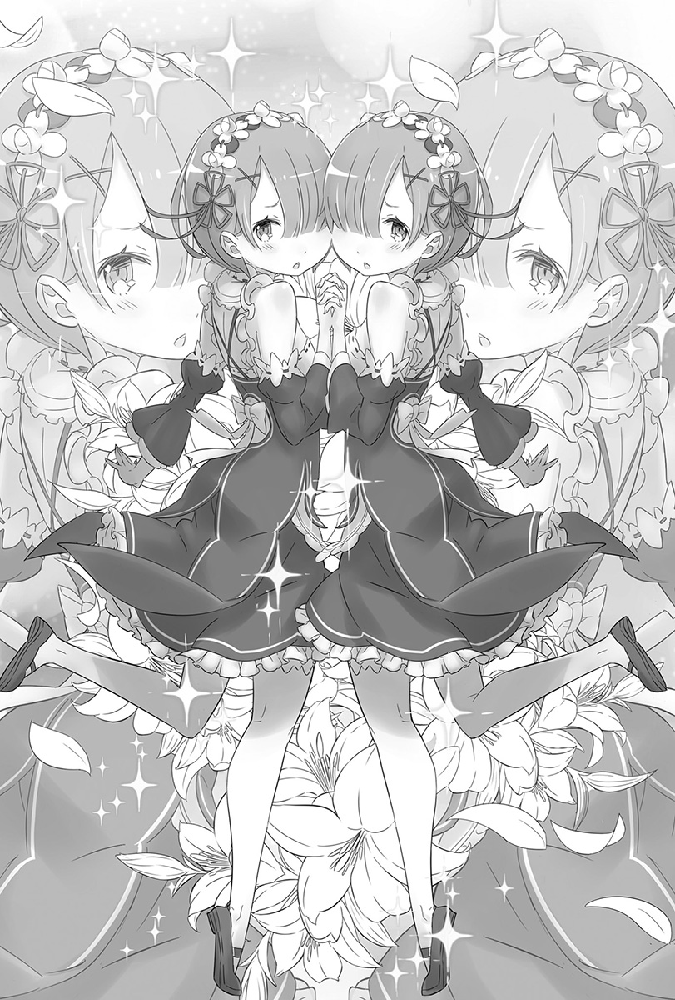
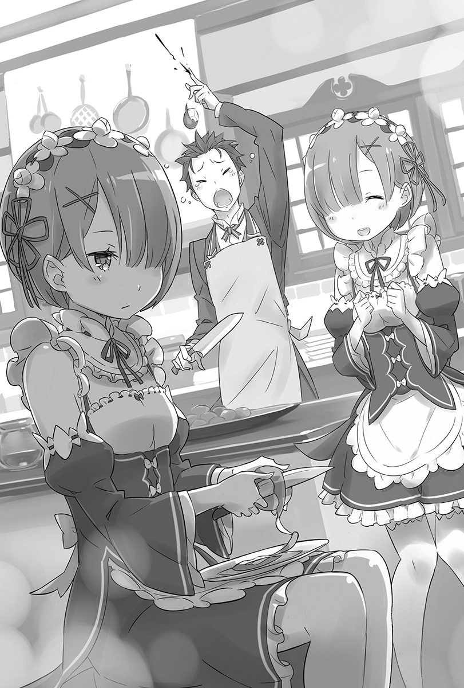
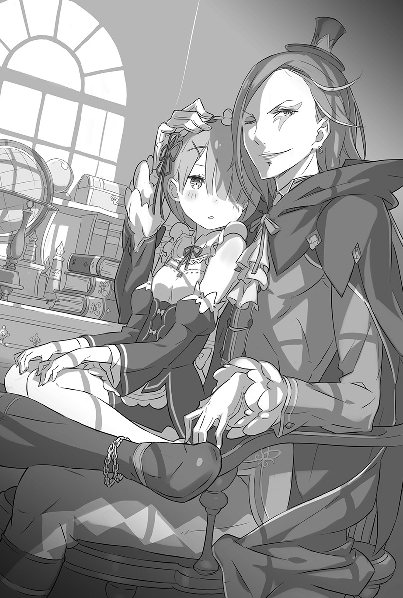

第一章 『自觉的感情』
1
睁开眼后最先看见的，是带着人工感的白色光芒。光芒后方是宽敞的天花板，垂吊下来的结晶闪耀着淡淡的光辉照耀室内。
用睡醒的脑袋确认眼前光景，昴的意识立刻清醒，他的体质是一旦睡醒就不会赖床。
「……枕头的触感真不一样，气味和质量跟我平常用的价格差了一位数吧。」
昴享受过棉被的触感后，从散发微香的床上撑起身体。
一眼就能看出这是上流阶层的房间。昴睡的床，大到可以睡五个人都还有剩——将近十坪大的宽敞房间里，就只有一张大得夸张的床，实在是很诡异的布置。
「只有墙壁挂画这种形式上的家具陈设反而更添寂寞啊，这真的能叫做是客房吗？」
完全清醒的昴下了床，稍微转动四肢确认身体状况。肩膀和双腿的转动良好，最后掀起衣服触碰腹部。
「肚子上的伤……没有了。淤青不用说，就连肚子被切破的痕迹都没有吗？从没有留下缝线这点来看，这个世界的外科手术很优秀呢。如果我的大活跃不是妄想的话啦。」
回想自己的肚子被深深砍破，以及这一连串发生的事。
原本在地球的日本当一名普通高中生的昴，突然被召唤到异世界然后死亡——就如字面上的意思，死过好几次。
而现在能够保住一命，是在多个奇迹重叠之下所产生的偶然。
「话说回来，在那之后过了多久……有没有可以显示时间的东西呢？」
绕着室内张望，但都没看到像日历或时钟这类东西。门上亮着黄色光芒的结晶很醒目，窗外的黑暗透露出现在是晚上这项新情报。
昴耸了耸肩，然后大口深呼吸，接着……
「总之不管怎样……这次是回避了『死亡回归』吧。」
道出这难以推断的结论后，终于下定决心要面对现实。
2
「第一次死得很惨，第二次是勇于赴死，第三次死得没有意义，第四次是在死斗结束后被流弹打中而死——不过却避开了这个发展。要是又死了，我就是彻头彻尾的路人甲了。」
把体重托付给床铺，昴扳着手指计算自己的死因，深感沮丧。
回顾过往，包含没死成的这一次，全都是死于刀伤，多到这阵子都不想看见刀了。
总之，在硬是回避了「死亡回归」后，时间总算是继续前进，原本受到致命伤的昴，可以像这样安然无事是因为……
「从状况来猜，是那女生……爱蜜莉雅用了回复魔法吧？」
浮现在脑海里的，是有着一头银发、蓝紫色瞳孔的美少女——爱蜜莉雅。
腹部的伤口会痊愈，一定是她治疗的吧。对有被爱蜜莉雅疗伤过的昴来说，会这么想是很自然的。
而且很自然地，昴必然会认为自己休息的客房——这间宅邸的主人也是爱蜜莉雅。不过……
「说到宅邸，也有可能是莱因哈鲁特他家。不管怎样……」
瞥了房门一眼，昴对杳无音讯的状况不满地叹了口气。
「一般来说，当我睁开眼时要有一名在枕边看护我的美少女对我说：『你醒啦？』才对呀。被召唤来的时候也没有美少女，这个召唤系统的BUG太明显啦……」
不但不能使出无双，邂逅女角的机会又很少，以召唤系统来说根本是不合格。
「而且，没动静到这种地步……不就只能自行确认现状好好给它大玩一下了吗？」
昴几乎是跳着起来，将手伸向房门。冰凉的空气从打开的门后流入，地板的冰冷直接传达给光着的双脚。
一出房间，眼前是墙壁和地板统一采用暖色系的宽大走廊，左右两边都是绵延的通道，恐怖的是走廊竟然长到看不见尽头。
「这豪宅气派过头了，叫人只能发出『呜哇啊』的声音啦。该说是超大还是广大无边……都没有人的气息耶。」
光脚走在走廊上，昴为这份静谧皱眉，连应该有的生活声响都完全没听见。
「撇开晚上这点不谈，这也安静过头了……这样会害我犹豫要不要吶喊耶。」
原本昴的性格应该是会大叫「有没有人在啊！」但以目前的状况来看，这么做可能会有危险。
毕竟现阶段，昴无从掌握自己是否置身在安全的场所。
是可以理所当然地判断有好心人将昴收留在宅邸内，但最糟糕的情况，就是在昴失去意识后，那个喜欢肠子的杀人魔跑回来绑架昴，这种可能性不能说没有。
话说回来，考虑到那种可能性后，就不能不采取行动。
「尽人事听天命，贤一不也这么说过吗？我也这么认为。」
顺带一提，贤一是昴的父亲，其实是个很有父亲架子的人。
昴迈开的步伐没有犹豫，但走了一段时间，他不解地歪着头。
「走这么久，别说是走到出入口了，连尽头都没看到，怎么会这样？」
异样的感觉挥之不去，决定走回头路再想想看该怎么做的昴转过身，结果却感到奇怪地皱起眉。
「这幅画……一开始走出房间的时候，不是在我的面前吗……」
站在走廊上的装饰油画前，昴双手抱胸沉吟。
画的主题是夜晚的森林，感觉跟自己一出房间就看到的是同一幅画。
如果不是自己走太慢……他突然想到一个可能性。
「地板有装设机关吗？该不会是让走廊像跑步机那样一直转动……吧？」
恐怕是在走廊上移动到某个距离，就会自动转移到地图另一头让人无限行走，这在RPG之类的游戏是很常见的地图圈套。
「要是走廊也会绕圈圈，那跟『死亡回归』还真是有够像的。」
没有征求任何人的同意，昴直接打开附近房间的门，结果里头什么都没有，可说是个家徒四壁的房间，当然里头也没人在。
「无限走廊和好几个房间……是不找到正确答案就出不去的关卡吗？」
尽管还无法完全接受异世界召唤这件事，但刚醒来就立刻遇上新的奇幻要素，真是叫人想抱头的状况。
「按照约定俗成的发展，我接下来得花上好几个钟头寻找正确的房间吧。现在肚子饿、精神耗弱、体力也快要见底，既然如此……」
倒吞一口气，擦去额头上的汗水，昴带着觉悟踏出第一步。
面对挂着油画的门，握住原本就是昴走出的房间门把，转动。
「回房间睡到别人来叫我吧，说不定是走开始的房间就是终点这种常见的设定。」
这种自暴自弃的性格和思维所触发的构想，促使昴没有确认就直接踏入房间——
「……怎么有个让人打从心底火大的家伙啊？」
然后，在毫无印象的书库里头，瞪着昴的卷发少女含恨说道。
3
——那是非常适合被称作「书库」的房间。
房间大小是方才客房的一倍有余，顶触天花板的书架埋没整个空间，架上的书籍整齐排列，其藏书量难以想象。
「唉，就算有这么多书也没一本我看得懂的……真叫人沮丧。」
即使扫视书架，也没看到写有日文的书皮，也没有拼音文字那类的书，全都是在王都看过的象形文字——这个世界的通用文字排列组合在封面上。
凝视看过好几次都看不懂的文字，昴忍不住叹气。
「一进来就没礼貌地看着别人的书架，然后又叹气……你该不会是来找碴的吧？是的话我接受喔？」
「说话那样带刺，可惜了你这可爱的脸蛋啰？来，笑一个笑一个。」
「贝蒂可爱是理所当然的，想看笑脸的话嘲笑的脸就够了。」
面对手指抵着脸颊卖笑的昴，少女在讨喜的脸蛋上露出无情的笑容。
这形容词在异世界用过几次了呢——美丽又楚楚可怜的少女。
年龄比在贫民窟遇到的菲鲁特还要小，大概才十一、二岁左右。大量使用花边的豪华洋装，格外适合她那张惹人怜爱的外貌。
浅奶油色的头发留得很长，烫成欧风长卷发是外观上最大的特征，要是肯露出微笑的话，任谁都会为她的可爱所融化。
少女抱着一本很大的书，坐在木制梯凳上仰望昴。
「你竟然知道嘲笑这种艰难的字汇呢。还有，你会不高兴莫非是因为我一猜就中？对不起喔，像这种解谜猜猜看，我从以前就很拿手。」
菜月．昴具备了就算没有提示，也能在多个选项里猜中答案的能力。过去昴就是凭这项技能，在无意识中击溃许多事件。方才的走廊难关，也只是在辉煌的成绩中再添一笔罢了。
「人家劳心劳力地构筑出领域，却被你那样就……差劲。」
「就GM来说，会希望玩家把所有事件都玩过一遍，这种心情我懂，抱歉啦抱歉。」
昴轻轻扬手道歉，少女半眯着眼带着恨意瞪过来。害臊地笑着响应那含恨视线的同时，昴在内心谨慎地整理现状。
从少女方才的发言来看，无限走廊的原因似乎就是她，但少女的计划却因昴轻率的举动而作废。
「唉呀，彼此彼此啦，就别提了吧。总而言之，告诉我这里是哪里吧。」
「哼，这里是贝蒂的书库兼寝室兼个人房。」
「我该对这答案感到扫兴吗？还是该为没有自己的房间，只能在这过夜的你感到悲哀？或者，该对把书库当成个人房这部分微笑呢？」
「稍微戏弄你一下你就讲那什么话！」
讽刺被人直接回敬而生气的少女——自称贝蒂的她鼓起脸颊，从梯凳上下来走向昴。
「贝蒂也快忍到极限了，要让你稍微了解自己惹到什么人。」
「喂，你想干嘛，别这样啦！如你所见，我是个毫无战斗力的普通人喔？」
露出水汪汪的大眼睛，把身子缩小，同时还微微颤抖身体表现出自己的柔弱，但是少女的步伐别说放慢了，反而还加快速度。
「——你就不要给我乱动。」
仿佛有一阵寒气窜过昴的背脊。
眼前的少女，已经走到伸手就能碰到昴的位置。
被个头只到自己胸部的少女用浅蓝色瞳孔凝视，昴整个人僵化，身体起鸡皮疙瘩，寂静在头盖骨里头敲出高亢的耳鸣。
「有什么话想说吗？」
听到少女的提问，昴在顷刻之间从僵硬中解放。在被原谅的这短暂瞬间，昴寻找哪句话最适合说出口。视线游移的昴，最后抖着嘴唇说：
「别、别弄痛我哟？」
「嘴皮子能耍到这种地步，实在叫人佩服。」
用真心佩服的口吻这么说完，少女的手就伸向昴的胸膛。手掌贴在胸膛上，手指温柔地划过表面，感觉痒痒的，然后——
「噗哇呜……！」
——下一秒，昴有种全身被火烤的错觉。
某种骇人的东西在体内肆虐，从脚趾到每一根头发仿佛全都被烧掉的感觉，不适感伴随着身体内外宛如被火焰手指摸遍的痛楚。
视野忽明忽暗，等注意到时，昴已流出大量泪水跪在地上。
「好像还没昏过去呢，就和听说的一样，是个健壮的家伙。」
「你、你做了什么？电钻头萝莉……」
「只是稍微干涉你体内的玛那而已，循环方式奇怪的王八蛋。」
少女蛮不在乎地说完，弯下腰，用手指戳着昴浑身颤抖的躯体。
「算了，至少确定你没有敌意。还有，方才对贝蒂的过分无礼行径，就用刚刚征收到的玛那饶了你吧。」
到达极限的昴，只是被戳而已就无法撑住上半身，整个头撞向地面。尽管如此，他还是花时间慢慢地转动脖子，瞪视带着嗜虐笑容俯瞰自己的少女。
「你，是那个吧……你不是人，这话不是在说你的性格。」
「都见过葛格了还这么慢才发现。」
少女愉悦地俯视趴在地面的昴，她的语气比外表还要年幼，反而让人感受到幼儿拔昆虫翅膀来玩的天真残酷。
「要订正……一件事……你连个性……都不是人……」
「高尚尊贵的存在，不是你的尺度可以测量的，人类。」
少女说出口的，是极度冰冷的话语。
昴感觉胸膛内部在闷烧，可是却连讲述感受到滚烫的力气都没有。意识无视昴的个人意愿，逐渐沉入黑暗。
——才刚睡醒，却又要失去意识了啊。
「死在这里的话，要跨越尸体很麻烦，去跟其他伙伴说吧。」
——说得像在讲虫子一样，不要这样形容我的尸体啦，你这家伙。说错了，是你这小鬼。
但连要这样耍贫嘴都没办法，昴再度陷入沉眠。
4
「唉呀，醒来了呢，姊姊。」
「是啊，醒来了呢，雷姆。」
再度睁开眼睛，是从两道音色相同的少女声音开始。
柔软舒适的触感就跟之前的床一样，烧灼昴睡醒的眼皮的，是从窗帘照进来的些许日光——这感觉应该是早上了吧。
「与其说是夜猫族，不如说有一半夜之眷族血统的我只要早上起床，胸口就会发热……」
边回想拒绝上学期间那日夜颠倒的生活，醒过来的昴撑起上半身，就这样旋转脖子、肩膀和腰杆，然后看向窗户。
「现在快要阳日七时了哟，客人。」
「现在已经阳日七时了呢，客人。」
声音亲切地告知时间。阳日七时——虽然不知道意思，但从字面上可以想象是早上七点吧。
「这么看来，刚刚醒过来那次不算的话，我睡了整整一天吧。没差，对于最高纪录是睡两天半的我来说没什么大不了的。」
「唉哟，真是废柴的发言呢。听见了吗？姊姊。」
「是啊，真是窝囊的发言呢。听到了喔，雷姆。」
「话说，从刚刚就一直用立体双声道责备我的你们是谁啊，小姐们！」
昴踢开棉被用力跃起，结果分别站在床的左右两侧，夹着他看的少女们吃了一惊，小跑步到房间中央会合。两人牵着对方的手，脸靠在一起看着昴。

并排而立的两位少女——是长相一模一样的双胞胎。
身高是一百五十公分的中间值，大大的眼睛和桃红色嘴唇，轮廓浅的脸蛋同时让幼稚和可爱并存，可用我见犹怜来形容。发型都是短发妹妹头，头发的分边方向不同，导致两人分别遮住左眼和右眼。
除了头发分边，还有发色——粉红色和蓝色这两样特征可区分。
大致观察过双胞胎少女的昴，内心被搅乱之余喉咙不自觉地颤抖。
「不会吧……连在这个世界，也有女仆装的存在吗！」
身穿以黑色为基础的围裙洋装，头上戴着白色发饰，裸露纤细肩膀的特殊改造女仆装与短裙相得益彰，清晰地表现出身材曲线，极尽煽情。就连对女仆装造诣不深的昴，都知道这打扮一定反映出设计师赤裸裸的兴趣——然而，双胞胎美少女穿着这身行头也是不争的事实。
「女仆给我的印象是涵养的体现……不过这样也不坏嘛！」
「不好了，刚刚姊姊在客人的脑里被迫遭受下流的凌辱。」
「糟糕了，刚刚雷姆在客人的脑里被迫接受耻辱的极限。」
「不要瞧不起我的脑容量喔，两位小姐全都是我妄想的牺牲品啦。」
昴的双手交叉，手掌在空中张开十指蠢动。这无意义的动作令两名女仆面露战栗，少女们松开牵着的手改为互相交握。
「请饶命，客人，请放雷姆走，污辱姊姊就好。」
「住手吧，客人，让拉姆逃跑，凌辱雷姆就好。」
「有够丑陋的，这什么姊妹爱啊！互相出卖对方就算了，还让我担任大坏蛋啊！」
就在两名女仆互推对方为受害者的时候，昴眯起自己的三角眼，犹豫该先对谁张开獠牙，结果突然发现……
「……就不能更安静一点起床吗？」
敲击打开的房门两声，看着三人的少女站在门口。
及腰的银长发今天没有绑起来，而是任其自然地落在背后。服装不是在王都看到的长袍，而是适合窈窕身段的抢眼白色造型服装。裙子意外的短，修长的绝妙双腿让昴忍不住摆出欢喜姿势。
「我就知道！我就知道我是被选上的人！」
「……不知道你知道了什么，不过我知道是很无聊的事，真是遗憾至极啊。」
银发少女——爱蜜莉雅用看起来很厌烦的眼神盯着喝采的昴。
爱蜜莉雅的突然造访，让昴睁眼后尽是困惑的心境一口气止跌回升。
接连出现的陌生人——特别是一开始的幼女让自己吃足了苦头，因此被召唤到异世界后，仅凭对话就成为知己的爱蜜莉雅，在自己心中占了特殊地位。
「听到碧翠丝在你血液量不够的时候对你恶作剧，所以有点担心……不过跑来探望的我根本是浪费时间。」
「可是睡醒后看到你的脸让我心情超好。对了，虽然会怕，但我想问你一件事。」
朝着纳闷的爱蜜莉雅，昴双手合十同时眼珠朝上看四十五度角。
「请问，那个……你还记得我吗？」
「那举动很讨人厌，还有这是什么怪问题，像昴这么让人印象深刻的男生，哪有那么容易忘掉。」
被微笑的爱蜜莉雅念到名字，昴安心地垂下肩膀，然后马上又注意到自己被女生直呼名字，难得地害臊了起来。
「请听我说，爱蜜莉雅大人，姊姊被那一位残酷凌辱了。」
「听我说啦，爱蜜莉雅大人，雷姆被那男的监禁凌辱了。」
扔下连耳根子都红透的昴，冲向爱蜜莉雅的双胞胎口说不是事实的话。听了两人的告密，爱蜜莉雅苦笑后斜眼看昴。
「竟然对你们两人那样恶作剧……我是不知道昴会不会争论说他没那么做啦，但我相信他一定不会这么做的，你们就别太戏弄人了。」
「好的——爱蜜莉雅大人，姊姊也有在反省。」
「好的——爱蜜莉雅大人，雷姆也有在反省。」
拉姆、雷姆，个别称呼自己的两人道出看不出来有在反省的宣言。是习惯她们这样的态度了吗？爱蜜莉雅丝毫没有介意的样子。
「那么昴，身体的状况如何？有没有哪里怪怪的？」
「嗯，喔，这么说来睡觉前全身好像被烧伤一样，我还以为会死呢，可是现在却完全没那种感觉，反而是睡过头觉得有点慵懒。」
「如果只是那样就行了，要不要出去散个步？」
「散步？」
面对轻笑的爱蜜莉雅，昴歪着头。
「对，散步。我刚好要去庭院做每日例行工作，要一道去吗？」
「每日例行工作……是要做什么？给花圃浇水？」
「有点不一样，是和精灵说话。每天早上，和订契约的孩子们那样互相接触，是我和他们的契约条件之一。」
精灵，这单字让昴想起了经常和爱蜜莉雅在一起的猫形精灵。
散步跟精灵的话题，真是个同时挑起好奇心和好色心的好提案。
「那就一起去，顺便当复健吧。爱蜜莉雅酱在庭院和精灵谈话的时候，我就到处走走拉拉筋活动活动啰。」
「嗯，只要不大声喧哗就行……咦？你刚刚说什么？」
「OK，口头约定好了，去庭院吧。」
「喂，你刚才说了什么？『酱』是什么？那是哪来的词汇？」
名字被冠上昵称令爱蜜莉雅很困惑。掩饰自己无法直呼她名字的害臊，昴同时看向站在身旁的两位女仆。
「嘿，女仆姊妹，我原本的衣服在哪？不知何时我穿得像是住院的病人，我想衣服八成还留在这屋子里。」
「你知道吗？姊姊，该不会是在说那块肮脏的灰色破布吧？」
「我知道啊，雷姆，大概是在说那块被血弄脏的鼠皮色烂布吧。」
「你们的发言有够大胆耶，就是那块肮脏沟鼠色的破烂布啦，没怎样的话就去拿来吧。」
在昴的要求下，双胞胎看向爱蜜莉雅，投以征求许可的视线。爱蜜莉雅抬起下巴响应，双胞胎就礼貌地鞠躬离开房间。
「虽然是我主动提出，但你绝对不可以勉强自己，因为你的伤势严重。」
「不过实际上，伤口愈合得很完美。喔，这么说来，对了。」
像是想起了什么，他端正姿势朝爱蜜莉雅慢慢鞠躬。
「为我治疗伤势的人，是爱蜜莉雅酱吧。谢谢你救了我，我果然很怕死，真的，死一次就够了。」
「一般都只有一次的机会吧……不对，不是这样啦。」
忍不住吐槽后，爱蜜莉雅睁着蓝紫色瞳孔看着昴。
「要道谢的是我，你不是豁出性命，在那里救了几乎不认识的我吗？所以治疗你的伤是当然的。」
真挚的眼神传达出感谢，昴忍不住呼吸一窒。
无法诚实回答的自己真是可恨。
——真想用「才不是那样」来回答爱蜜莉雅的「要道谢的是我」。先救人的明明是爱蜜莉雅。
但是那样的记忆，如今只存在于昴的心中。
咽下那不可能传达出去的感谢心情，昴笑说：
「——那不然，我们是互相帮助就正负抵销了，怎么样？」
「正负抵销……？」
「就是互不相欠，两人都站在对等的状态！所以说让我们好好相处吧，兄弟！」
若对方是贫民窟的居民，说到这就会轻松地勾肩搭背了，但是现在昴能做的就只有趁势模糊掉羞耻和害臊。面对这样的昴，爱蜜莉雅小声地笑出声。
「我才不要这么奇怪的弟弟呢。」
「这评语太辛辣了吧！？」
还有被若无其事当成弟弟的沮丧感。
就在两人相视而笑的时候，房门打开，双胞胎女仆回来了。看到两人分别拿着的运动服上衣和裤子，昴挺直背脊。
「又再一次，开始新的一天了呀。」
跨越「死亡回归」后的第一天，「真的」开始了。
5
断然拒绝刻意想要帮忙更衣的两位女仆，独自换好衣服的昴和爱蜜莉雅走到宅邸的庭院。
环视宽敞的庭院，昴叹气道：
「有够大的耶，住宅也很大，可是这庭院根本是原野了。」
有钱人宅邸的庭园——在漫画和动画常常出现，大到可以举办自助餐派对的风景就在眼前拓展。站在一望无际的庭院正中央，昴立刻开始做伸展操当作复健。
看到昴的动作，爱蜜莉雅一脸不可思议。
「好少见的动作，这是在干嘛？」
「唉呀？你没有热身运动的概念吗？就是在认真活动身体前，先把全身关节都松一松。」
「嗯——没什么看过呢，不过我知道突然活动身体很危险。」
「这个世界的人都不热身的喔？算了，没办法，要不我教你吧？来自我故乡的纯正热身操！」
「好、好啊，那就稍微做做看。」是被昴自信满满的气魄给压过了吧，爱蜜莉雅虽然后退却还是模仿着昴。昴要爱蜜莉雅站在身旁，然后大声说：
「广播体操第二段！双手前伸然后往上举，拉长背部的运动～！」
「咦，不会吧，什么！？」
「照着我的动作做做看，你将会吸收广播体操的真髓。」
训斥着困惑不解的爱蜜莉雅，昴同时背诵全国知名的广播体操口诀。
一开始倍感疑惑的爱蜜莉雅，在快结束时已经全心投入地在做体操。
做完最后的深呼吸，两人双手朝天高举，结束体操。
「最后举起双手，胜利！」
「胜、胜利——」
「很好，头一次就做得很棒，我授与『广播体操手初级』这个称号给爱蜜莉雅酱！」
全力做完广播体操，接受昴授与称号的爱蜜莉雅露出感动不已的表情。但在调整好呼吸后，她才想起一开始的目的。
「对了，话题被岔得很远，要是忘记我会被骂。」
说完，微微一笑的爱蜜莉雅从怀中取出绿色结晶给昴看。
「啊，这个是……」
「是精灵寄宿的结晶石啦，你认识帕克呢。」
「是那只在紧要关头跑去睡觉的小猫？它不是不知道我之后的活跃吗？」
「很遗憾，在事情告一段落之后，我听莉雅说过了哟，昴。」
仿佛对昴说的坏话起反应，结晶石发出光芒。响起的声音颇为中性，从结晶石溢出的光芒顷刻集结起来，在爱蜜莉雅的手掌上形成小小的轮廓。
巴掌大的娇小身躯，快和身体一样长的尾巴，用双脚步行的小猫精灵帕克，现身。
「哟，早安啊，昴，很棒的早晨呢。」
「对我来说从深夜到清晨这段期间是波澜万丈呢。不过，无限走廊和性格恶劣又威猛无比的幼女，跨越这些的早晨，和爱蜜莉雅酱一同流下热情的汗水……」
「不要说得让人怀疑好吗？」
爱蜜莉雅嘟起嘴巴责备，然后凝视掌中的帕克。
「早安，帕克。昨天对不起，让你勉强自己。」
「早安，莉雅。不过，昨天的事我认为是我不对哟，事态危险到差点失去你，就算感谢昴都还嫌不够呢。」
帕克用又圆又黑不溜丢的眼珠仰望昴，然后用手摸自己粉红色的鼻子。
「我得道谢，有没有什么想做的事？大部分的事我都能替你办到。」
「那么，就让我想摸的时候摸你的毛吧。」
面对大方的帕克，昴也立刻回答。
帕克和爱蜜莉雅双眼圆睁，一方面是因为他回答得很快，另外也是因为回答的内容叫人吃惊。
「你、你不稍微想一想再做决定吗？虽然看起来小小的不可靠，可是帕克的力量非常惊人喔。」
「有点过分呢，不过就跟她说的一样。别看我这样，我可是非常伟大的精灵哟。」
「喂喂喂，对我这种一流的顺毛工匠来说，随时可以玩弄想碰触的把玩对象，其价值可是用亿万财富来交换也不觉得可惜喔。唉呀，我是说真的。」
昴边说边履行权利，朝帕克伸出手。腹部、下巴，然后是致命的耳朵。
「耳朵太赞了！我已经迷恋上你的毛茸茸触感了！」
「我能稍微读取人心所以知道，不过会认真这么说的人实在太叫人吃惊了。」
被手指任意抚弄的帕克，喉咙愉快地咕噜咕噜叫。
昴和帕克玩耍的模样，让爱蜜莉雅放弃似地吐出叹息。
「那么，我去跟微精灵们聊天了……昴和帕克就在这边玩，不要过来打扰喔。」
「被抛弃了呢。」
「被抛弃啦。」
两人开玩笑地耸了耸肩，爱蜜莉雅没有答腔，无视他们快步走到庭院角落。她轻拂地面后坐了下来，闭上眼睛的她，周围开始被朦胧的光晕包围——这是很眼熟的场景。
「是微精灵吗？」
「没错，你竟然有办法区分，很多人都无法区分准精灵和微精灵呢。」
「我瞎猜的……才不是呢，但其实我也不知道区分的方法喔？」
昴会知道漂浮在爱蜜莉雅周围的光点是微精灵，是因为在王都发生的死亡回归中，有一次曾听爱蜜莉雅提起微精灵这个单字。
坐着的爱蜜莉雅小声地和微精灵交谈，仿佛和微笑的她同步，微精灵们不时也跟着闪烁微弱光芒。
「刚刚有提到和微精灵订契约，具体来说是要做什么啊？」
「进行和精灵之间的契约仪式——就是履行誓约。」
听到没听过的单字，昴皱起眉头。
「嗯——首先呢，精灵使者不跟精灵订契约就没办法使用精灵术，而契约的内容视精灵而定。到这边懂吗？」
「就是债主不同，利息或抵押品也不同吧，OK。」
「我是不OK啦，不过继续讲吧。总之，每个精灵要求的都不一样……但是像那种微精灵，只要用和术师接触这样的简单条件就能订下契约。」
「该说简单还是适合初学者呢？话说回来，照你刚刚说的，成形精灵要求的东西很不同啰？」
「聪明的孩子，领悟得快节省了说明时间，虽然有时候会莫名离题导致没有进展。」
「没有啦。」昴害羞地笑道。帕克对他投以温暖的视线后，抚弄自己的胡须。
「如你所言，像我这种有意识的精灵，要求就会严格一点。不过相对的，会给予契约者相应的贡献……我给莉雅的条件也很严苛喔。」
「我从刚刚就很在意，『莉雅』这个叫法很可爱耶。」
「还是输给你的『爱蜜莉雅酱』了——我下次也那么叫吧。」
「——算我求你们，绝对不要。」
爱蜜莉雅鼓着面颊介入两人的难笑话题。
回来的爱蜜莉雅，周围已经没有精灵的光辉，看来精灵TALK SHOW结束了。昴站起身，拍掉屁股上沾到的草。
「恳亲会结束了吗？感觉很简单就结束了呢。」
「因为很在意你们两个，所以就请他们提前结束，明天可得要好好聊聊了。」
爱蜜莉雅边说边伸出手掌，在昴下方移动的帕克跳了上去，它睁着圆滚滚的眼珠看向爱蜜莉雅，饶富深意地轻笑。
「不用担心，我探索了一下，没在昴身上发现恶意、敌意和危害的念头。尽管本性有点别扭，不过是个好孩子。」
「慢着……」
帕克的直接评语让爱蜜莉雅不禁哑口无言，接着吞吞吐吐地说：
「怎么在本人面前……那种事就算是真的，听别人这样讲不是会受伤吗？」
「啊——没关系、没关系啦，像我这种来历不明的家伙，试探我很正常，怀疑我也是理所当然，反而是刚刚爱蜜莉雅补充的话才伤人！」
昴对连忙用手捂住嘴巴的爱蜜莉雅露出苦笑。
帕克不可能毫无理由就接触自己，这点昴早就料想到了。
目前一点有用情报都没被套出的昴，爱蜜莉雅他们不会大意到毫无警戒就接纳。拉姆和雷姆的态度，也是这种思维的部分产物吧。
「说是这样说啦，但又没有能够好好说明的方法。」
只有记忆却没有户籍，就是昴在这个世界的现状。
被召唤来的事实难以说明，而且很有可能会被当成神经病。
既然如此，还不如交由帕克为自己做人格判断。
如果是可以读取内心表层，又深受爱蜜莉雅信赖的帕克，它说的话绝对比昴亲口说明还要有说服力。
「没事的，莉雅。不如说，昴本身也明白，甚至还利用我的读心术，真是坏孩子。」
「真是光荣的评价。就这样好好说服她吧，MY FRIEND。」
对昴的呼唤呈现愣住的表情，接着帕克捧腹大笑。
「真是好久没有被这样子对待了。嗯，我欣赏你。」
「可以的话，我想要爱蜜莉雅酱的评价。正所谓射将先射马，唉呀，没有马只有猫会有效果吗？……会怎么样呢？」
昴的手指抵着下巴认真烦恼，爱蜜莉雅惊讶地看向他。
昴疑惑地抬起眉毛，爱蜜莉雅说着「没事。」然后小小地倒抽一口气。
「——昴真的，很不可思议呢。」
「啊？」
「能够这样自然地接触精灵，而且还对我这种……半妖精抛媚眼，就算是开玩笑也让人惊讶。」
「如果不是开玩笑，就能让你大吃一惊吗？」昴虽然在内心这么说，但在看到爱蜜莉雅的微笑后就着迷到忘了。
因为她的微笑，就跟在王都互相告知姓名时一样纯粹。并不虚幻也不难过，光是看着内心就忍不住雀跃。
美丽流泄的银发宛如月之水滴般梦幻，肌肤像初雪一样洁白，蓝紫色的瞳孔仿佛施展了魅惑咒术，吸引昴的意识不肯放开。
高贵、美丽，拥有一颗百折不挠的内心，昴知道她是这样的人。
很自然的，差点对那张侧脸怀有感激之外的情感，昴连忙自制。
「唉呀，她们在干嘛？」
注意到什么的爱蜜莉雅开口说道，昴也跟着看向宅邸。
从屋子走入庭园的，是双胞胎女仆。
两人走到昴他们面前，庄严地行礼。
「——当家，罗兹瓦尔大人回来了，请诸位回屋里。」
毫无分秒落差，完美无缺的双声道。
虽然很讶异一丝不差的双人合唱，但双胞胎骤变的态度更叫昴吃惊。
先前的轻率感消失，从两人身上感受到的只有豪宅佣人的威严。
「是吗？罗兹瓦尔回来了……那就得去迎接了。」
「是，还请客人也移驾，主人说若您醒了就请您一并前来。」
帕克钻进爱蜜莉雅的银发里，抚摸头发接纳的爱蜜莉雅表情有点僵硬。凝视她的侧面，被指名的昴扭动脖子发出喀喀声响。
「话说，罗兹瓦尔是谁？」
「这栋宅邸的主人……对喔，都没跟你说明。」
察觉到自己的疏失，爱蜜莉雅用掌心遮着嘴巴。
「嗯，这个嘛，罗兹瓦尔他……你见到就懂了。」
「太快放弃说明了啦！这么没特征吗！？」
「——不，刚好相反。」
爱蜜莉雅、帕克、拉姆和雷姆，四人同时回答。
惊人的四重奏让昴目瞪口呆。用手将他的嘴巴从下方合起来的蓝发少女，严肃地一鞠躬。
站在旁边的粉红色头发女仆，用手指向屋子。
「不管用什么样的言语，都难以形容罗兹瓦尔大人，见到他本人之后，客人您就能理解。请放心，他是很温柔的人。」
重复叮咛反而煽动了不信任感，但双胞胎只是互看一眼然后点头。
勉强同意的爱蜜莉雅，朝困惑的昴轻轻伸出手。
「——我想，昴一定和他很合得来，不过可能会很累就是了。」
拍了拍昴的肩膀，爱蜜莉雅沉重地低语。
第二章 『约定之晨尚远』
1
「从上面看的感觉，就是那个吧……你的脑袋似乎蠢得可以。」
被双胞胎带到餐厅里说要享用早餐，却遇到用这番话来代替打招呼的卷发少女。
爱蜜莉雅为了换装所以先回房间，因此和她中途就分开，现在在餐厅里的就只有昴和卷发少女。少女的讽刺招来昴极为不悦的表情。
「在清爽的早晨，一碰面就突然讲那什么话，你这萝莉。」
「那是什么单字，听都没听过，只觉得很不爽。」
「就是不在攻略范围内，年幼的意思。我对年纪小的没兴趣。」
「……对贝蒂无礼到这种地步，反而让人觉得悲哀。」
刻意无视少女挖苦的话，昴环顾宽敞的餐厅。
餐厅中央放着一张铺了白布的桌子，有几个座位已经摆好了餐盘，如果也准备了昴的份，那位于末席的某一个位置就是昴的吧。
「连餐桌礼仪都不懂的我，也被允许列席吗？」
「傲慢至极。既然不懂就该有不懂的样子，乖乖低头不就好了。」
「与其向你低头，我宁可正大光明地坐在主位然后被骂得狗血淋头。」
面对红着脸展露怒意的少女，昴挥挥手就要往主位坐下去。坐在这个位置的，八成是爱蜜莉雅或屋主吧，可能性是各一半。
看到昴真的将屁股坐在主位上，卷发少女露出嫌恶表情摇了摇头。
「算了，随便你。在那之前，你没有感谢的话要对贝蒂说吗？」
「还感谢咧，先前你不是才挥开我求救的手吗？这样子还要求感谢，你是怎样被养大才能做出这种结论啊，真想看看你的双亲长什么样！」
「为什么是你生气！想生气的是贝蒂吧！难得好心……」
对挑衅的话还口，昴的响应让少女的声音大了起来，不过最后却越来越小声。少女不自然切断对话的方式，反倒促使昴继续挑衅，不过……
「打扰了，客人，送餐点来了。」
「打扰了，客人，送餐具和热茶来了。」
餐厅的门打开，推着餐车的双胞胎女仆走了进来。
蓝发女仆将色拉和面包等正统早餐内容摆上桌，粉红色头发女仆快速地在杯中倒茶并分配到每个座位前。热腾腾的香气，让昴的肚子忍不住叫出声。
「哇啊——不错不错，贵族味十足的餐桌。我本来还在想，要是摆满了异世界的奇特食物该怎么办呢。」
光是场所在异世界这点，就让人担心会端出什么料理，看到菜色昴总算安心了。
大致看来，没有会对肉体和精神构成重大危机的食品。
食欲高涨，昴将整个人靠向椅背，只让两个椅脚承受体重，椅子发出的吱嘎声响彻餐厅，在少女装模作样的脸蛋上添加不耐。
昴不知为何就是想要逗弄卷发少女。萌生让她假正经的表情因感情而瓦解的恶作剧念头后，昴全神贯注地滑动臀部——
「啊哈——啊，有没有——好东西呢？好——东西哟，好——东西。」
在那之前，踏入餐厅的新人物开心雀跃的声音中断了一切。
是个身高很高的人。
比昴高半个头，深蓝色的头发长到快要碰到背。
可是体格方面，与其说瘦，更接近纤细，肌肤的颜色也是病态的惨白。
配上端正的容貌，俨然是个抑郁阴沉的美青年。
左黄右蓝的不同瞳色，鲜明地强化了那个印象。
——要是没有那身配色奇特到爆的服装，以及根本是小丑的脸妆的话。
「……吃饭前还雇用小丑来做余兴表演吗？真搞不懂有钱人的想法。」
「你在想什么大致猜得到，不过贝蒂就不干涉了。」
「好冷淡喔，贝蒂。我跟你是同伴吧？再多跟我热情地聊天嘛。」
「贝蒂跟你之间哪有什么关系，还有，不准随便叫贝蒂的名字。」
态度冷漠的少女耸肩后脱离对话，昴对她这样的态度苦着一张脸。踏进餐厅的小丑和昴一样看向少女，然后瞪大双眼。
「喔——呀——？碧翠丝会在这真稀奇。隔了这——么久，终于想跟我一起用餐，这不是很开——心吗？」
「脑袋幸福的人只要有那边的家伙就够了，贝蒂只是在等葛格而已。」
无情地斩断亲昵的发言，少女——碧翠丝的视线投向小丑身后，比小丑慢踏进餐厅的，是换好衣服的银发少女。
「葛格！」
像弹跳似的起身，碧翠丝晃动长裙跑了过去。仿佛花朵绽放的笑容，洋溢着可爱魅力让人忘记少女至今的自大。
碧翠丝的视线前方站着爱蜜莉雅，但回应的人却不是她。
「哟，贝蒂。四天没见了，有没有好好当个有精神的端庄淑女呀？」
碧翠丝对一派轻松自银发中现身的灰色小猫——帕克点头。
「我满心期待葛格回来哟，今天我们一起过吧。」
「嗯，没问题呀，好久没这样了，今天就一起悠哉度过吧。」
「哇——好棒！」
跳下爱蜜莉雅的肩膀，帕克落在碧翠丝伸出的手掌上。怜爱地抱住帕克，碧翠丝开心地当场旋转。
「呵呵，受惊了吧？碧翠丝真黏帕克。」
「好久没听到『受惊』这种话了呢……」
露出调皮笑容的爱蜜莉雅，走向被这和乐融融景象吓到的昴。才刚对说出少用语词的爱蜜莉雅吐出既定台词，她就发出「咦？」的声音指向昴。
「唉呀，昴，那个座位……」
「啊，对了！不对，不是啦。这个啊，你看，椅子要是冷的坐起来可能会连心灵都跟着消气，所以我只是先帮忙温热，可不是想要间接接触喔？」
在双目圆睁的爱蜜莉雅面前，庞大计划落空的昴从椅子上滑下。
「唉呀唉——呀，别放在——心上啦。原来如此，你的体温或许没能传给爱蜜莉雅大人，但这个我会好好——慎重地收下——」
小丑伸手轻拍昴的肩膀像是安慰，然后笑了。轮流看着碰触肩膀的手和小丑温柔的笑脸，昴嫌恶地皱起脸。
「这个小丑是怎样，超爱装熟的。触碰舞娘是违反规则的哟？」
「什么时候变舞娘……不对，昴，这个人是……」
「唉呀唉呀唉——呀——没关系哟，爱蜜莉雅大人。想到他从濒死状态恢复到这么有精神的样子，不就应该——欢迎他吗？」
尽管口气让人不耐，但发言却都极为正经。小丑就这样承受大家的视线，拉了椅子慢慢坐下来。
坐在偌大餐桌最顶级的座位，也就是昴刚刚坐的位置。
「喂喂，不是我要说，随便坐在那里的话可能会被伟大的人骂喔。」
「不用担这个心……看样子，你还没跟昴报上名号吧。」
听到昴的忠告，爱蜜莉雅非常傻眼地说。只不过，她的傻眼不是对昴，而是对小丑。
「什么意思？」
「意思——就是，这个——意思啰。」
面对昴的疑问，坐在椅子上的小丑摊开双手回应。
「我是这栋屋子的主人，罗兹瓦尔．L．梅札斯——是也。你在寒舍平安无事、舒适地度过了呢，那比——什么都重要——菜月．昴。」
打扮成小丑的变态贵族，厚脸皮到神清气爽地报上名号。
2
以坐在主位的罗兹瓦尔为首，大家各自坐在准备好的座位上，开始享用早餐。
「嗯……比一般的食物还好吃。」
从陈列在眼前的食物中，掠夺色拉和汤到嘴巴里的昴说出感想。
「呵呵——对吧对吧，这样看来，雷姆的料理很经济实惠哟？」
自豪的罗兹瓦尔点头响应，昴看向应该是负责下厨的雷姆。雷姆在他的视线里头用手比出一个食指和小指往上翘的手势，虽然不知道那是什么意思，不过八成是这个世界代表V的手势吧？作为回礼，昴用双手比出青蛙的手势回应。
「这道料理是蓝发的……呃，可以叫你雷姆吧？是你做的吗？」
「是的，客人。屋里的餐桌是由雷姆负责，因为姊姊不太擅长。」
「哈哈——这对双胞胎擅长的技能不一样，那么，姊姊是比较擅长打扫喔？」
「是，正是如此。打扫和洗涤，是家事中姊姊最擅长的。」
「那雷姆是虽然擅长下厨，却不擅长打扫和洗涤啰？」
「不，雷姆基本上所有的家事都擅长，打扫和洗涤也很擅长，做得比姊姊还好。」
「姊姊的存在意义消失了耶！？」
万能妹妹，和连在擅长项目都不如妹妹的姊姊，以双胞胎来说反而很新鲜。
拉姆丝毫不在意妹妹的发言。没有订正代表是事实，不过就算如此，拉姆没有丝毫动摇的态度不会有问题吗？
「还是领域不同？拉姆是战斗系，朝庭院守门人的方向发展如何？」
「你不错——耶，拉姆和雷姆的个性都很强悍，所以第一次见面时都不太受欢迎。」
「在角色的个性深度上，因为主人太过特殊所以根本就不算什么哟，罗兹亲。」
被昵称为「罗兹亲」的罗兹瓦尔，用权势者的从容宽恕昴的发言。
对习于煽动对方引出情感的昴来说，他这是逃避发言的行为，不过昴并不在意，接二连三地吞食、消化盘中的菜肴。
「虽然有过饭很难吃要怎么办的念头，不过这么美味就没问题了。对吧，爱蜜莉雅酱。」
面对昴随性的呼唤，用餐巾擦嘴巴的爱蜜莉雅以扑克脸回应。昴歪头思考怎么了，结果她小声叹气。
「我说昴，用餐时禁止聊天，这样对两个人准备我们餐点的雷姆和拉姆很没礼貌，要是没有礼仪，可是会在重要场面以失败告吹的喔。」
「好久没听人说『告吹』了……总之你要说的是餐桌礼仪吧？都已经这种状况了，你现在才说？」
昴一边回应既定台词，一边用手指向餐桌。在宽大的餐桌旁，昴和爱蜜莉雅比邻而坐。
原本，两人的座位距离为活用餐桌的宽大而离得很远。
「你看，我想在爱蜜莉雅酱的旁边用餐，所以移了过来。罗兹亲默许的时间点你不说，等到现在才说？要不然，你可以把讨厌的青菜丢到我盘子里喔。」
「那圆椒拿去……唉哟，不是这样啦。讨厌，我简直像个笨蛋。」
说输人后就嘟起嘴巴的爱蜜莉雅，可爱得让昴笑了。
接着，昴从她方才的话中挑出疑问点。
「对了，罗兹亲，我刚刚好像听到爱蜜莉雅酱说，这栋豪宅的佣人就只有两个。」
「啊哈～现状确实是如此哟，就只有拉姆和雷姆而已。」
「照料这栋大得要命的豪宅的人只有两个，在讲究质量之前会先过劳死的。还是说……是无法雇用新佣人？」
面对昴的提问，罗兹瓦尔沉默下来，双手在餐桌上交握。他的脸上浮现笑容，但看着昴的双眸，里头的情感明显有所改变。
「你真的很不可思议——呢，来到露格尼卡王国的梅札斯边境伯宅邸，却还一派——搞不清楚状况的样子呢，亏你能通过王国的入国审查。」
「唉呀，在某种意义上，我有点像是偷渡入境啦……」
听到昴不经大脑的回答，爱蜜莉雅大吃一惊，眼神转为像在斥责稚子。
「受不了你，那种事还大剌剌地说出来，小心被可怕的人打得落花流水哟。」
「好久没听到『打得落花流水』这种话了。」
「不要扯开话题。我说昴，你真的不要紧吗？你身边的人都这样吗？还是只有你特别无知？」
对真心担心自己的爱蜜莉雅感到过意不去，昴反省自己的态度。
「啊——是我的记性比较差吧，要是不麻烦，愿意解释的话在下会备感荣幸。」
「听你会用这样的用字遣词，感觉就像是规矩人家的小孩……」
「在正式社交场合说出那种话的话，我的社交界出道之路会堵塞的。总觉得爱蜜莉雅酱在这方面的知识意外贫乏？我刚刚的尊敬语和谦让语可是不按文法、乱糟糟的哟？」
「呜……我无法否定。」
被昴指出问题点的爱蜜莉雅缩小身子。虽然惊讶爱蜜莉雅有这样的一面，不过为退缩的她说话的，是坐在主位一直不说话的罗兹瓦尔。
「你的说法我也不是不懂，不过爱蜜莉雅大人现在还——在学习哟。」
「学习啊，那方面可以牵扯到刚刚的话题吗？」
「你果然有在动脑，正因为有在动脑，才会有像是不经大脑的发言。」
面对貌似佩服的罗兹瓦尔，昴抖擞肩膀后拍打自己的胸部。
「活着动脑思考是理所当然的吧，四面楚歌、生死一线间的紧要时刻，彻底思考如何避免腹部内容物哗啦啦跑出来可是人类的义务。」
「哗啦啦跑出来的形容，简直就像是有亲身体验……嗯，回到原本话题，昴你知道这个国家——露格尼卡王国现在是什么状况吗？」
「完完全全、彻头彻尾、一点都不知道。」
「被你那样神清气爽地断言，叫我对你的生存方式感到惊讶。」
这不是称赞的话吧，看到爱蜜莉雅慈爱的眼神后，昴如此心想。虽然不是使用挑起保护欲的战术，但内心的距离感确实变得像母亲与幼童一样。
「是说，提到国家的状况……是发生了什么坏事吗？」
「不是很稳定的状态啦，毕——竟呢，现在的露格尼卡『没有国王』。」
品味罗兹瓦尔的话，理解意义后昴的呼吸一窒。
朝画着小丑妆的男子投以警戒眼神后，昴立刻在座位上摆开架势。
「不——用那么警戒，没必要担心，因为这已——经是市井小民都知道的严——重事实喔。」
「这样啊。不对，是那种被告知危险秘密而无法活着回去的剧情吗？」
「由我告知才知道，昴真可怜……总而言之，国内因为这样很不安定。」
原来如此。昴能理解，王位虚悬的状态，对王国的经营型态是致命伤。不管是病逝还是其他原因，国王突然的「死讯」都会动摇整个国家。
「不过，这种情况，一般来说不是由国王的子嗣来继承就解决了吗？」
「一般来说——是这样没错，可是呢——事情的起因要回溯到半年前。在国王驾崩的同一时期，城内有瘟疫蔓延。」
对外宣布传染病只有特定血统的人才会发作，罗兹瓦尔娓娓道来。
据说，在王城里头生活的国王及其子孙全都因此灭绝。
「既然是生病就不能责备本人啦，不过这样一来国家会变怎样？既然国王的血脉没有了，那就是以民意为优先选出总理大臣啰？」
「后半段我完——全不懂你在说什么，不过，目前王国的运作是由贤人会在执行。他们每一位的出身，都是在王国史上留下显赫名声的豪门世家，所以王国的运作没有问题。不过——」
罗兹瓦尔在这边停顿，收敛表情。
「——没有国王的王国，不应该存在。」
「这倒是。」
就算只是装饰，没有头脑存在的组织就不成立，国家也是一样。
「原来如此，我越来越了解了。也就是说，这王国因为没有国王而陷入选王的混乱风暴中，还因此缩小与他国的关系呈现锁国状态。这时出现了神秘的外国人——我，怎么看都超级可疑！」
「再——附加说明，接触爱蜜莉雅大人是想要和梅札斯家攀——上关系。虽然都是环境证据，但只要有那个意思，光凭这样就足以……」
罗兹瓦尔闭上眼睛，手摆出刀子的姿势，抵着脖子比出斩首的模样。看着罗兹瓦尔的恶作剧，昴因这突然的讨厌预感而止不住冷汗。
没错，从刚刚开始昴就一直很在意一件事。
「为什么……豪宅的主人要在爱蜜莉雅酱的名字后面加『大人』两个字？」
在宅邸里头地位最高的人物，却释出最大程度的敬意。
昴感觉胸口的不安滋长，快要开出黑色花朵。罗兹瓦尔朝他一笑。
「这是当然——的啰？对地位比自己高的人就要用敬称——嘛。」
嘴巴张开、浑身僵硬的昴，用仿佛会发出齿轮摩擦声的机械式动作看向爱蜜莉雅，结果一脸严肃的少女吐气，像是听天由命。
「我没想过要骗你的。」
「——呃，所以说，爱蜜莉雅酱是……」
得不到教训继续用昵称的昴，被补上最后一刀。
「我现在的头衔是露格尼卡王国第四十二代『国王候补』人选之一，那边的罗兹瓦尔边境伯是我的后盾。」
被告知的事实，让昴深切体会到自己的不敬行为已经突破天际。
3
——在异世界邂逅的美少女，是女王陛下。
单单只看这句话，完全是正统派的奇幻异世界风格。
正确来说是女王候补，但一想到自己至今是怎么对待这位女王候补的，他忍不住说道：
「就算有三条命也不够用啊……」
「抱歉，吓到你了，我没打算瞒你这么久的。」
「嗯呀，我没生气，爱蜜莉雅酱真的像天使一样温柔呢。」
「咦！？」
昴过于直接的话让爱蜜莉雅说不出话来，接着脸颊泛上红晕。
「没有啦，其实我能做到这样，原动力全都是从爱蜜莉雅酱开始的。以这层意义来看，这真的是E．M．T（爱蜜莉雅酱．真的是．天使）哟！」
「……唉，总觉得能了解要如何和你应对了。你那不管对谁都能说的俏皮话就先忘了，直接进入主题可以吧。」
脸上还留有一抹残红，爱蜜莉雅拍手导正气氛。由于她拉开椅子恢复先前的距离感，昴也只能无可奈何地遵从。
「好——啦，虽然岔——到感觉不——错的歪路去，不过就进入主题——吧。昴，准备好——了吗？」
「刚刚的话题走向没让我脑袋飞掉，就让我祈祷不是坏事吧。」
听到昴说的话，罗兹瓦尔吹响口哨，爱蜜莉雅也露出意外的眼神，因为他们判断昴方才的言行举止，具备了探查两人真心的意图吧。
当然，那是他们解读过度，不过昴没让他们察觉到这点。
「刚刚只是在进入主题前，顺便提一下我的预测。刻意把话题导向爱蜜莉雅酱是女王陛下候补，能在包含这点的情况下说明状况吗？」
「……其实，昴很聪明吧？还是脑袋有问题？」
「这个二选一踩到我的极限啰！」
听到昴的抱怨，爱蜜莉雅轻轻吐舌谢罪。因为很可爱，所以原谅她。
昴草率的内心戏先不管，罗兹瓦尔在爱蜜莉雅道歉后紧接着说：
「你的预测非常正确。你的处境，和方才的事大有关系——爱蜜莉雅大人。」
「嗯，知道了。」
点头回应的爱蜜莉雅，从怀中拿出某样东西放在餐桌上。
看到伸长的纤白手指推出的东西，昴挑起眉毛。
「——这不是那个徽章吗？」
在白布上闪耀光辉的，是中央镶着宝珠，以龙为图腾的徽章。
它曾被手脚不干净、名叫菲鲁特的少女给偷走，是昴死了三次才终于归还给原持有者爱蜜莉雅的重要道具。
宝珠闪闪发亮，深邃清澈的颜色让再度目睹的昴怀抱敬畏之心。
「龙是露格尼卡的象征，重视到了自——称是『亲龙王国露格尼卡』的地步。城墙和兵器到处都有龙的图像，其中又以这枚徽章最为重要。」
罗兹瓦尔说到这故意停顿，昴朝他送上催促的视线，结果罗兹瓦尔用目光催促爱蜜莉雅继续。爱蜜莉雅闭上眼睛，颤动嘴唇。
「王选参加者的资格——这徽章是用来确认，持有者是否适合坐上露格尼卡王国王位的试金石。」
紧张声音告知的事实，让昴的眼珠子都快掉下来了。餐桌上的徽章是以展开双翼的龙为意象，宝珠的光芒证实了方才的话皆为真实。
「怎、怎么会……竟然搞丢过王选参加资格的徽章！？」
「讲搞丢很难听耶，是被手脚不干净的坏女孩给偷了！」
「一样啦！」
大叫拍桌的昴站起来，虽然力道大到餐具差点掉出餐桌，但在场随侍的雷姆完美地进行支持，但昴看都不看一眼地说：
「要是真的弄丢了，你倒是说说看该怎么办啊！？那不是扔掉也没啥大不了的道具吧！区公所可是不会再发放的哟！？」
「好——啦，弄丢的话——不是道歉就能了事，这点——毋庸置疑啦。」
看到昴慌张地大吼大叫，罗兹瓦尔将没必要的大衣领拉整后回答。
「所谓的国王，就是背负王国之人。要背负这重责大任的人，若是连一枚小小的徽章都无法保护就太荒谬了，会让人无法想象为何要将国家托付给此人——吧。」
「那是当然，这种事要是被知道一定会闹得沸沸扬扬……正因如此！」
围绕被偷的徽章在王都发生的骚动，然后是这场款待，导出的答案只有一个。
「曾弄丢徽章的事要是公诸于世就惨了，所以找徽章的时候爱蜜莉雅酱才会坚持要自己处理，不肯借助外力。」
「……对，就是这样。」
「偷徽章的犯人是菲鲁特，但委托者是艾尔莎，那家伙也说她是受人之托……这样看来，是有人想要妨碍爱蜜莉雅酱成为女王陛下啰？」
「正——是如此。想让她失去王选参加者的资格，因此想到了抢走徽章这个简单的方法——呢。」
昨天发生的各种事情，在昴的心中开始连成一条线。
顽固抗拒帮助的爱蜜莉雅，菲鲁特和艾尔莎的委托人，还有让昴三度被杀的原因，这枚徽章就是有这种价值，也是昴能像这样住在豪宅还被款待的理由。
「重新思考后，我超GJ！让我对奖赏的期待更高了！」
不用想也知道自己的功劳有多大，昴得意洋洋，连呼吸都跟着变用力，俯视爱蜜莉雅活动手指做出色眯眯的样子。完全是等着被吐槽的模样，但是……
「嗯，就是这样。昴对我来说是大恩人，光是救你一命也不足以回报你的恩情，所以尽管开口吧。」
「啊？」
「只要能力所及我都会办到，不，是一定会办到。昴会找我，多少也是有这层意思在吧。」
看她手贴胸膛一脸认真地回望自己，昴说不出话来。
脸颊肌肉僵硬，紧张感的刻度无法和周遭的严肃氛围对齐。
——糟糕，我太不会看气氛了。
没能看出周遭气氛的紧张感，无法跟爱蜜莉雅认真的眼神热度咬合，使得昴不知所措。结果，为难到最后……
「……干什么？」
「没有，忍不住就伸手了。」
昴的手指滑进盯着他看的爱蜜莉雅头发里。
与其说是摸头，更像是手指在享受头发的触感。
「如果要奖赏，看，这样子就够让我开心了，我要求不高。」
「……你也很爱摸帕克的毛，昴是不是会对体毛产生兴奋感啊？」
「别把头发归类在体毛里头啦！你这可是漂亮的银发耶！」
惨不忍睹的评价令昴哀嚎。爱蜜莉雅的银发摸起来就像丝绢一样，既柔软又具有异于帕克毛发吸引昴的魅力。
不过听到昴的话，爱蜜莉雅不知为何痛苦地垂下眼帘。不清楚她这举动的理由，昴歪着头思考。就在他脖子侧倾时，感受到来自背后的视线。
「啊，妨碍到你了——吗？如果是那个，我们就先退下啰？」
「那种顾虑在说出口的时候就成了多管闲事，而且我的发问时间还没结束。」
继续享受爱蜜莉雅的头发触感，昴用空着的手指向罗兹瓦尔。
「我知道爱蜜莉雅酱是女王候补了，不过身为她后盾的你，又是站在什么样的立场呢？」
「旁边的人都在看哟——你啊，从刚刚——对事物的理解力就好得没话说，以出身成长都是平民的人来说，你会不会懂得太多——了呢？」
「能得到这份赞美让我光荣备至，不过这单纯是受到动画和轻小说的影响，让我的大脑习惯了奇幻故事的走向罢了。」
奇幻题材的世界观总是掺杂难以记住的原创单字，身为跨越无数这种障碍的一名读者，这种程度的设定就算公布了，也无法让脑袋陷入混乱。
「嗯，好像没有隐瞒——呀。我的头衔是露格尼卡王国的……大致就是边境伯的身分啦。如果要更好听的职称，就是宫廷魔术师——啰。」
「宫廷魔术师……也就是城堡聘雇的魔法使者？」
「对，而且还是首屈一指的魔术师……这人就是王国里最厉害的魔法使者。」
接着昴说话的人是爱蜜莉雅，不过不知怎么的，她的表情有点不高兴。对她那样的反应似乎很开心的罗兹瓦尔，放松紧抿的红唇笑了。
「就顺着这些话继续说下去吧，我的立场是支持身为国王候补的爱蜜莉雅大人，把后盾这说词换个说法，就是条件不错的资助人。」
「资助人啊。」
赞助商代表，这就是罗兹瓦尔目前的头衔啰？
昴重新打量高个子小丑，然后偷偷朝爱蜜莉雅使眼色。
「虽然有点难以启齿……不过爱蜜莉雅酱，你就不能挑更好的人选吗？」
「没办法呀，我在王国内又没有可以倚靠的人，原本愿意协助我的就只有喜好异于常人的罗兹瓦尔……」
「原——来如此，消去法啊。」
「你们两位，不知道眼前的资助人很可怕——是好事——呢。」
虽然觉得被贬低，但别说是生气了，罗兹瓦尔还成熟地含笑对应。是器量大呢？还是他就是那种要被人轻蔑才能感受到愉悦的个性？
「那么，回到正题，罗兹亲是爱蜜莉雅酱的资助人，这我知道了。从小地方处处都隐隐可见天然呆和土包子部分的可爱爱蜜莉雅酱，昨天会在王都单独行动，不是非常罕见的事吗？」
「那是第一次——吧，原本拉姆应该也在一起——的。」
罗兹瓦尔苦笑着将话题扔向拉姆。昴朝话题所指的方向看过去，拉姆把头发旁分的方向改成和身边的雷姆一样，然后露出什么都不知道的样子。发色完全不同，有乔装就跟没乔装一样。
「那个自信满满觉得『好极了，蒙混过去了！』的脸，叫人看了就火大耶。」
不管当事人有没有反省的意思，反正有取得口头确认就成功了。然而，这时出现了举起手、满脸尴尬的爱蜜莉雅。
「那个不是拉姆的错，昨天是我……该说是输给了些微的好奇心吗？总之就是胡里胡涂地和拉姆走散了。」
「那个像萌角的理由是怎样，这跟爱蜜莉雅酱的天然呆满出来不同，仆人没有遵守主人的命令是事实哟。你怎么说——咧？」
昴双手指着庇护拉姆的爱蜜莉雅，然后手指直接转向罗兹瓦尔。
「确实也有一番道理，拉姆的监督不周，或许——我也要负责。不过，把事扯到这来，你究竟想说什么——呢？」
「很简单，没有盯着身分重要的爱蜜莉雅酱是你那边的疏失，而我就是针对这点攻击的坏蛋。我的做法是只要被我找到可趁之机，能榨干的我就尽量榨干。」
昴说的话，让室内所有人的表情为之一变。
爱蜜莉雅皱眉，双胞胎用怀着歉意和敌意的眼神瞪昴，碧翠丝充满热情的眼神依旧向着帕克，帕克则是在鸡蛋料理前滑倒，头插进蛋黄里头。罗兹瓦尔浮现了然于心的微笑，点头说道：
「原——来如此。确实，就私人财产而言，比起等同身无分文的爱蜜莉雅大人，我这个资助人更适合用来——要求奖赏呢。」
「对吧？而且罗兹亲应该不会拒绝才是，毕竟我不但是爱蜜莉雅酱的救命恩人，还是防止她从王选之争中落马的救世主或啥的！」
从椅子上站起来，昴指着天空做出胜者姿势。
「我不会——不认同，因为这是事实。那么，以这为出发点，可以换我问你吗？」
同样站起来的罗兹瓦尔，以身高优势俯瞰昴，爱蜜莉雅担心地看着互瞪的两人。
「你想要——什么呢？就现状来说，我不会拒绝，为了掩盖遗失徽章的事实，我什么都愿意支付。来——你想要什么？」
「嘿、嘿、嘿，不愧是贵族大人，很懂事理嘛。奖赏就如我所愿，而且罗兹亲不得拒绝，男子汉绝不食言！」
「很豪迈的发言——呢，确实如此，男人不该找借口，我绝不食言。」
昴那俨然是小恶棍的态度，令身后发出好感度下降的声音，但这一切全都是为了引出罗兹瓦尔承诺自己的伏笔。
罗兹瓦尔首肯后，昴会心一笑。
「我的愿望就一个，雇用我在这豪宅工作。」
和前面落落长的开场白相反，昴的要求简洁有力。
昴的要求让身后的女性阵容都呆住了，缺乏表情变化的双胞胎面容浮现困惑，碧翠丝露出真的很嫌恶的表情，而爱蜜莉雅……
「不、不是我要说，你那也太……」
与生俱来的美貌和神秘感，让她即使翻白眼效果也减半。
「惊讶的表情也很可爱，不过你就这么反对我的提案？」
「不是那样，而是你太无欲无求了！」
气得好像是在说自己的事，爱蜜莉雅拍桌后逼近昴。
「你懂吗？帕克那次就算了，刚刚你又……不对，说起来，你在王都时也只要求知道我的名字。」
爱蜜莉雅罗列出自己所知昴应该可以得到奖赏的场合，知道那些结果的爱蜜莉雅摇头，因为她无法理解昴在想什么。
「我的……你根本就不懂我感谢你的心情，那样的要求……不管再多也完全无法回报你救我一命的恩情！」
语尾越来越弱，爱蜜莉雅手掌贴着昴的胸膛垂下头。
听到爱蜜莉雅的恸哭，昴深切感受到自己思虑不周。
爱蜜莉雅一直觉得欠自己人情，因为自己索求的回报和恩情完全不对等。
可是就这点来说，昴也一样。
昴也一直觉得亏欠爱蜜莉雅。
而且，还是无法再向爱蜜莉雅求得答案的亏欠。
因为在这个世界，已经没有可以回报的恩情。
爱蜜莉雅湿润的蓝紫色瞳孔正面仰望昴。
认真眼神透露出的恳切色彩，让昴舍弃打马虎眼蒙混现状的选项。
然后极尽所能以真挚的态度，向她传达自己的真心。
「爱蜜莉雅酱不了解吧，我每一次每一回，都是真心真意地说出打从心底想要的事物哟？」
「——咦？」
「那时候，我想知道你的名字。明天无从预料，在新天地不安得叫人惊慌失措，或许冷静下来思考就会有许许多多必需、想要的东西——可是，我是不对自己说谎的男人。」
死了三次，就为了得到那报酬。
只是为了眼前银发少女的笑容，还有想知道她的名字而豁出性命。
——在那瞬间，当然不可能去期望更多的奖赏。
「对罗兹亲的要求也是一样。我现在啊，是彻头彻尾的穷光蛋，虽然要一大笔钱痛快地挥霍也是可以，可是能够持续取得基本生活的资金也很不错吧？」
「……那也用不着当佣人，当个食客不就得了？」
「还有这招啊！罗兹瓦尔先生，请务必让我当食客……」
抓着一丝希望看向罗兹瓦尔，但他的双手在头上交叉。
「只有最初的要求有效，因为男子汉——绝不食言的嘛。」
「对——喔！说得没错，男子汉绝不食言！」
方才某人的发言被反弹回来，只能哭着咽下。
「刚刚有一瞬间对你另眼相看……看来似乎是我想太多了。」
「再加上得到爱蜜莉雅酱的这个评价，倒霉事怎么接踵而来啊！」
昴因自己的失言，失去了理想的异世界好吃懒做环境，再加上美少女对自己的好感度也跟着下降，实在是祸不单行。
「不管怎样……就是这样了。只靠拉姆和雷姆照料豪宅负担也太大了，男仆已就定位，请多多差遣。」
「虽说的确是很迫切的问题——呢，不过就像爱蜜莉雅大人说的，我也认为——你太没有欲望——啰？」
罗兹瓦尔第一次露出带着苦涩的笑容，昴朝他竖起指头左右晃动。
「我可是超级贪婪的男人喔。看就知道了吧？能够合法地和超级可爱又超级符合我喜好的美少女生活在同一个屋檐下，只要距离缩短了那心灵的距离也会跟着缩短，机会变成无限大！」
「原——来如此，确实是那样。和喜爱的女性身处在同个职场，可说是——难能可贵的机会，真——的是很棒的状况。」
「对啊，而且——」
昴停下摇晃的手指，将手伸向头部，然后抓乱自己的黑发。
「像我这样来历不明的家伙，与其不清不楚地放着，还是留在手边比较好吧？这样还能看出我对爱蜜莉雅酱是有用还是有害。」
昴非常清楚自身的立场有点糟，要是事态演变成没有张开防护线就想离开宅邸，事情一定不会那么简单就结束吧。考虑到这点，他才会做出这种发言。
如果罗兹瓦尔没有丝毫头绪，这话铁定会成为让人说不出话的找碴。
但是，有别于昴这样的尴尬心情。
「就这么办吧。你希望——能够打好关系吧？」
立刻反击的罗兹瓦尔闭上一只眼，只留黄色瞳孔看着昴回答。
那妖异光彩里头的感情，昴完全无法读取。
虽是题外话，但情不自禁顺着现场气氛做出类似告白的发言，昴因而内心娇羞不已。
但是，畏畏缩缩地窥视爱蜜莉雅的表情后……
「真是的，昴实在是个拿你没办法的孩子……怎么了？」
被这样平淡的响应，昴也只能语塞。
是自己想太多吗？还是这也是不习惯跟美少女相处，经验值低下所导出的结果？
「喜欢的女生这么不把自己当成对象，反而让我燃起斗志了，喝！」
尽管置身在格外紧迫的环境，昴却朝完全偏离的方向提起干劲。斜眼看他的爱蜜莉雅，小声地自言自语。
「话说回来……拉姆和雷姆，哪个是昴喜欢的人呢？」
曲解方才的发言，爱蜜莉雅手指贴着嘴唇，任错误的想象在心中膨胀。
4
——拖得很长的早餐时光结束，雇用昴的事情也大致决定。
看出事态发展，最早离席的是卷发少女——碧翠丝。
「事情好像定下来了，贝蒂也该跟葛格回去了。」
解决完自己的餐点，碧翠丝打算早早离去。对她连餐具都不收的无礼态度忍不住皱眉，昴竖起的手指朝旁挥向现在想要走人的少女。
「等一下，没必要这么赶吧……是说，也该不靠他人自己自我介绍才对。现在，就只有你的身分我还不知道，你是罗兹亲的妹妹？」
「竟然被当成那个的亲戚，看来你惹火贝蒂的功夫也很高明。」
相较于不爽爆表还叹气的碧翠丝，被人说得很惨的罗兹瓦尔只是开心地笑。在碧翠丝危险的视线中，昴缩起肩膀。
「贝蒂是罗兹瓦尔家禁书库的图书馆员啦。」
「葛格！？」
不过，悠哉插嘴的灰色小猫的发言，打乱了即将开始吵闹的气氛。小猫正在啃咬洒上砂糖并经过油炸，像是脆饼的土司边甜点。
「好甜，好吃，呜喵！」
「因为甜味而失去理智，这样不太好喔。是说，可以麻烦你讲得详细一点吗？」
昴一边催促沉浸在甜味中的帕克，一边趁机摸它耳朵享受至高无上的触感。被抚摸的帕克从盘子里抬起头。
「罗兹瓦尔身为魔术师本事十分了得，而他们家门第显赫，自然也会有代代相传，不能让人看到的书籍啰。贝蒂是遵照契约来守护那些书的，对吧？」
「嗯，就是这样，葛格说的话不论何时都正确无误。」
简直是跟盲从没两样的发言。碧翠丝的手伸向提心吊胆的昴没摸的那只耳朵，手指一碰到猫毛，少女俏丽的脸蛋就开始融化。
碧翠丝头一次在昴面前展露出和外表相符的可爱表情，昴忍不住惊讶地屏息。结果，从旁看着两人一猫的爱蜜莉雅微侧着头。
「这样子，看起来就像感情很好的两个人在抚摸小猫呢。」
「被说跟这家伙感情好实在有点……」
「被说跟这家伙感情好贝蒂敬谢不敏。」
听到爱蜜莉雅的感想，昴和碧翠丝的回答重叠在一起。相较于隐藏了几分羞涩的昴，碧翠丝的眼神认真无比。
「呵呵，将互看不顺眼的两人一同收为俘虏的我真是恐怖……喵喵喵！」
夹在两人之间，忙着自夸的帕克被爱蜜莉雅伸过来的手拎起而拼命挣扎。等到它不乱动，爱蜜莉雅才叹了口气。
「那个暂且不提，禁书库的看守人，这职业强烈地撼动了我的男儿心呢。」
着迷地看着精疲力尽的帕克，碧翠丝的表情对昴的感想表现出显著的降温。尽管如此，她还是摸着自己的卷发诚实回答。
「刚刚葛格几乎都说明过了，你进去的那个房间就是禁书库啦。」
「喔，那个满是书的房间啊。」
想起让人担心地板会不会塌陷的藏书量，昴理解到那就是禁书库。相反的，若那里的藏书全都是禁书，光是这样就觉得荡漾着犯罪的感觉。
「说不定这个萝莉，是在不知情的状况下被迫帮忙的可悲萝莉。」
「这单字不管听几次都叫人一肚子火呢，还有扔下回答完问题的贝蒂，去思考全世界最无聊的事，更是让人气得要死。」
「别绷得那么紧，吃点小鱼干吧。摄取钙质情绪会比较稳定，个头也会长高喔。虽然我觉得我跟爱蜜莉雅酱的身高差距，在谈恋爱方面是刚刚好啦……」
装作给愤慨的碧翠丝建议，昴偷偷朝爱蜜莉雅使眼色，但是她却置若罔闻，只是凑近碧翠丝。
「等一下，碧翠丝……你该不会邀请昴进禁书库吧？」
「……怎么可能啊，贝蒂根本没必要特意邀请那种来路不明的家伙，是他擅自选中『机遇门』的正确答案啦。」
额上冒青筋的碧翠丝粗鲁地站起，默默推开餐厅的门。
「奇怪？走廊呢？」
无法解释的光景出现在面前，昴忍不住发出愚蠢的疑问。
眼前——理应是通往豪宅走廊的门，后方出现的却是书架排列整齐的大房间。那是曾经看过一次的地方，对在那里昏倒的事还记忆犹新呢。
「这就是『机遇门』，你就把这神秘感烙印在眼底，尽情颤抖吧。葛格，来这边。」
踏入禁书库后，自豪地望向昴的碧翠丝伸出手，帕克便从爱蜜莉雅脚边跳上少女的手掌。
确认后碧翠丝就关上门，少女和小猫就这样隐身在门后。
「喔喔，厉害。」
让激动不已的昴更加惊讶的，是拉姆什么也没说便直接去打开关上的门的举动。被粗暴关上的门后方，连接的是昴要靠自己的脚行走的走廊，前一秒的光景简直就像是骗人的。
「原来如此，也就是用屋子里的门连到自己房间的魔法。皇家认证家里蹲，在有厕所解放危机时超方便的。」
「该说意外吗？你不怎么惊讶呢。刚刚说的家里蹲是什么？」
「为疲劳归宅的家人着想，牺牲自我持续保护家庭的守护神。」
「是喔……是很厉害的人吗？昴也是家里蹲吗？」
「嘎噗！」
本来是想哄骗爱蜜莉雅，没想到却被她反过来关心，昴感觉像是被砍了一刀。
「好——啦好啦，那么接着自我介绍——吧，拉姆，雷姆。」
无视因自作自受而认输的昴，和歪头思索的爱蜜莉雅，罗兹瓦尔拍手聚集注意力。被叫到名字的双胞胎安静地走到前方，抓住裙子尾端一齐行礼。
「重新自我介绍，我是此宅邸的佣人领班雷姆。」
「再次介绍，我是罗兹瓦尔大人宅邸的普通佣人拉姆哟。」
「姊姊突然急速坦白起来了，不过，轮不到我来说啦。」
听到昴双手抱胸的发言，双胞胎牵起彼此的手看向昴。
「因为客人……不对，昴现在是同事了吧？」
「因为客人……不对，毛一样是下人了吧？」
「喂，大姊，我的名字怎么变成让人瞎眼的咒语啦。」
这是跟人初次见面时，自己的名字一定会被拿来说笑的梗，可是拉姆和雷姆应该不知道才对。强忍焦急，昴回过头看罗兹瓦尔。
「我的立场是那个吗？果然比起管家，我更像实习佣人？」
「就现状来说，接受两人的指示处理杂务，是你最——优先的工作。有何不满吗？」
「如果要说不满，就只有刚刚搞错要你雇用还是养我的自己而已。唉，后悔也没用的事就不要后悔了。就是这样，请多多指教，前辈们。我会全力以赴，粉身什么去了啊。」
「碎骨。」
「就是那个啊。」
三人在瞬间指着对方道出说不出来的单字，接着昴伸手喊出「耶——」另外两人就跟他击掌回应。这已经不是合作无间，而是建立起法则来了。
「友好的情谊真美，彼此仿佛——毫无芥蒂，身为雇主也非常——高兴。是吧？」
「真不可思议，我们的波长很合得来，跟那个萝莉不一样。毫无疑问的，我们超级投缘！比那个萝莉还要投缘！」
「你就是讨厌被人认为跟碧翠丝感情好啦……」
爱蜜莉雅怜悯地沉吟，为餐厅的齐聚划下结局。
5
「那么，毛，走吧。」
这么说的拉姆，方才直接被罗兹瓦尔任命为昴的指导员。丢下利落整理餐厅的妹妹雷姆，完全不帮忙的拉姆伸手打开餐厅的门。
「啊，感觉我的称呼会就这样定型下去了。」
「嗯，是啊，毛。因为罗兹瓦尔大人指示，所以先带毛参观宅邸，你可以做到跟着我的脚步不迷路吧？」
「我又不是爱蜜莉雅酱，才不会因为好奇就乱跑咧。」
「昴！」
在王都迷路的事被拿来调侃，爱蜜莉雅气得鼓起腮帮子。
在这之后，昴要和身为国王候补必须完成各种职务和进修的爱蜜莉雅分开行动。在不久后的分别前，先将爱蜜莉雅的美貌烙印在眼里吧。
「那么，虽然依依不舍，不过走吧，前辈。」
「就这么办，毛。那么爱蜜莉雅大人，稍后见。」
离开前，拉姆抓着裙子行礼，昴也跟在她的后头。
「昴，我会努力……你也要加油喔。」
「在帮我打气吗？我超开心的，干劲都源源不绝涌出了。」
昴学拉姆抓着运动服衣摆行礼，将爱蜜莉雅道别的表情当成珍奇之物猛看后退出房间，结果发现等在通道的拉姆皱着眉头。
「别露出厌烦的表情嘛，大姊。人家只是稍微俏皮一下，我对女仆文化可没有生疏到把女仆跟男佣搞混喔？对了，有没有制服啊？」
穿着运动服开始佣人生活也太无趣了。
听到昴的话，拉姆手贴着嘴，点头说着：「对耶。」
「服装很重要，有尺寸刚好的衣服吗……嗯，记得是有。」
「太好了，那就先换好衣服再上工吧。感觉我会意外的适合正式服装呢，一定很优雅又高尚。」
目测竖起拇指、牙齿闪耀光芒的昴的体格后，拉姆指向楼上。
「二楼是佣人的休息室，衣服就在那边换。毛的尺寸，应该和上上个月辞职的法兰黛莉卡一样。」
「喔——在这刚刚好的时间点辞职的法兰黛莉卡……是女的？」
「身材和昴大致上一样啦。」
「可是性别不同吧？」
停下脚步的拉姆翻白眼看昴，然后状似疲累地手摸额头。
「是很优雅又高尚的正式服装……你到底有什么好不满的？」
「全部啦！爱蜜莉雅酱穿的话，就算要花钱我也想看，可是我穿女仆装有谁想看啊！到时要是我开启了奇怪的癖好怎么办！我不想让那萌芽啊！」
不但无能还在异世界中堕落喜欢上穿女装，若演变成那样，讲得极端一点不如死了算了。可是，偏偏昴又有死后一切重来的恐怖能力，届时真的会无药可救。
就这样，在拉姆的带领下，他们来到了豪宅的西侧。罗兹瓦尔宅邸分成正中央的本栋，还有分别以通道连接的东栋和西栋，总计三栋组成的建筑物。餐厅和罗兹瓦尔的办公室都在本栋，佣人的休息室则是位在西栋。
「二楼的休息室……对了，除了挂门牌的房间，看你要选哪一间都可以，就挑你喜欢的当个人房，替换的制服就放在里头。」
「好——了解。那么，哪间好咧……」
被允许在豪宅内拥有私人房，昴站在通道口眺望候补房间。话虽如此，不过就是位置不同，内在应该都一样，既然如此靠近楼梯的房间比较方便吧。
「好，就这个房间……」
「葛格好棒，这顶级的毛茸茸触感，呼哇啊……」
没有多想就打开门的瞬间，发现一个在书库里头和小猫玩的萝莉。
察觉到有人，卷发萝莉的视线慢慢对向昴。昴回头看站在走廊的拉姆，确认她摇了摇头，于是他竖起拇指。
「我不会跟别人说的，所以放心吧，任何人在那触感之前都只是愚蠢之辈——」
「少说些很伟大的蠢话，还不快点关上门！」
「嘎呀噗嗯！」
被看不见的力量——八成是魔法之类的东西给撞飞，昴狠狠地撞上走廊墙壁。碧翠丝斜眼瞄了撞到后脑杓而眼睛打转的昴后，发出剧烈声响用力关闭门。
昴摇摇头，想要抗议刚刚的暴行，但打开门里头是空荡荡的客房而扑了个空，因为「机遇门」的效果发动了。
「只要碧翠丝大人消除气息，就没人知道她在哪里，除非每扇门都可以到，不然就只能等她自己出来。」
拉姆说得像是「你就爽快一点承认自己输了吧」。
她从后方安慰似地拍了拍昴的肩膀，那触感让昴认知到自己的败北——
「我整个火都上来了，像我一样恶劣的那家伙，态度太恶劣了！」
才不认输呢。
挥开拉姆的手，昴回过头在走廊上全力冲刺。在瞪大双眼的拉姆面前，他冲到走廊最尽头的门。
「在这里！」
「——呀啊！？」
「好厉害喔，昴。」
少女的惨叫和灰色猫咪的称赞。
才刚看到「机遇门」再度被解开，碧翠丝的脸庞出现动摇的一幕，就因为这次没被撞飞而直接跌进书库里。
在书库里不被允许的大动作，让碧翠丝横眉竖目暴跳如雷。
「灰尘都跑起来啦！」
「这都要怪你没有好好打扫工作场所吧！而且书库哪能带猫进来啊！是要用厚书皮给它磨爪子吗！」
「我的指甲被莉雅剪得很短，所以不用担心啦。」
站在互相叫嚣的昴和碧翠丝身旁，帕克悠哉的嘀咕没能传给争论的两人。他们就这样对骂，声音响彻整间屋子。
缓缓走到连接禁书库门扉的拉姆，看着吵架的两人小声地说：
「姑且不论感情，投缘这点似乎是真的。」
「——才没有好吗！！」
早晨的罗兹瓦尔宅邸，在双重奏的叫喊下用力晃动。
6
昴的佣人生活，就这样以怒涛之势点燃战火。
结束和碧翠丝的不期而遇后，昴在服装间穿上拉姆给的佣人服。白色衬衫搭配黑色外套和裤子，和昴心目中的管家打扮完全吻合，但是问题在于……
「喂——拉姆亲，我是先穿上了啦，不过……」
「我对那个称呼很有意见。哪里不合身……」
在房外等他换好衣服的拉姆响应呼唤，边抱怨边进入房间。在看到换好衣服的昴后，她的话语突然中断，手碰着下巴说：
「好像不对劲，问题在肩膀和腿短吧。」
「可以改说『裤长』吗！？衬衫基本上没问题，可是外套的肩膀周围很紧，因为有在无意义地锻炼身体，所以上半身比较有肌肉。」
如拉姆所见，肩膀的松紧和裤管的长度就是不合身的原因。特别是肩膀，腋下甚至无法贴在躯干上。因为是别人用过的二手衣，所以出现这样的问题是很正常的。
「裤管卷起来就行，但上面就没办法了，如果要把裤管改短我是可以自己来啦。」
「毛意外的有才能呢……不管怎样，可不能让你用那种寒酸样工作，不然会被人怀疑这间宅邸甚至是罗兹瓦尔大人的品味。」
「他本人都那副样子了，还有品味可言啊？」
虽然没有表情，但昴也知道自己的话让拉姆不高兴了，所以他乖乖闭上嘴巴。看到昴做出合上嘴巴的手势，拉姆叹了口气。
「就算没有内在，要是连外表都不整齐就没有可看之处了。总而言之，裤管之后再改，就算只有外套也要修改一下吧。」
「就算你这么说，可是这边的修改难度很高吧？我又没什么这方面的经验。」
这不是做或不做的问题吧。以为要挑战自己裁缝技能极限的昴，拉姆对他说了「不用担心。」的开场白。
「雷姆会来。」
「会来……就算叫她她也不见得有空……」
「叫我吗？姊姊。」
「呼喔喔喔喔喔！」
原本想吐槽她那轻松的呼唤，结果雷姆却立刻从旁现身，叫人打心底感到害怕。
昴惊讶过度整个人僵住，双胞胎用同样的动作歪着脖子思索。
「为什么这么讶异呢？」
「为什么那么害怕呢？」
「才才才、才没有害怕咧！我只是有点吓到而已，双胞胎力量真绝！」
这就是所谓的双胞胎共感，即使分离也能互通意念啊。在感动的昴面前，拉姆用鼻子哼了一声。
「才不是那样呢，只是看到她经过所以才叫她罢了，真是可喜可贺。」
「有没有最后一句话，大幅关系到我内心裂痕的尺寸耶？」
「所以，有什么事吗？如果是跟昴有关，那雷姆就没空喔。」
「你也是，不用要那种毫无破绽的感觉伤害我！我是新来的耶！对我温柔一点啦！」
话虽如此，事实上雷姆的力量在维护这间豪宅上是不可或缺的，太过麻烦她确实不好，可是姊姊却指着昴对如此重要的妹妹说：
「雷姆，看到昴这么难看的样子，有发现什么吗？」
「肩膀怪怪的，脚短短的，还有眼神很恐怖吧？」
「生来无力可回天的部分就不要加进来了！容貌偏差值和普通的偏差值不同，是分类在本人怎么努力也徒劳无功的领域啊！」
不在乎昴的控诉，姊妹继续对话。明明是当事人却被撇在圈圈外，昴只好快乐地进行卷起长裤的作业，然后……
「毛，把外套给雷姆，明天早上以前就能改好了。」
「那真是得救了，可是……这样好吗？工作都堆积如山吧。」
「当然忙到团团转，所以要是别发奇怪的牢骚直接交出来，那就是帮了大忙。」
「啊——知道了，麻烦你了。」
在正确言论的吩咐下，昴脱下外套交给雷姆。接过外套，这次换雷姆指着服装间，用下巴示意昴进去。
「得量尺寸，你自己做不来吧？」
「……什么事都麻烦你，真是过意不去。」
「没关系啦，反正这个恩情，总有一天要你十倍回报。」
「这样说不对吧，而且看起来不像是说谎或开玩笑，很恐怖耶！」
留下把自己讲得像是现场众人之中最伟大的拉姆，昴和雷姆进入服装间。
服装间里头不只有佣人的制服，还保管了许多罗兹瓦尔的替换服装，全都是奇特无比、色彩鲜艳的衣服，搞得整个房间像是马戏团的戏服更衣室。
穿过主人品味怪异的服装区后，看见几件保守但华丽的衣裳，其中有陈列曾在王都看过的服装，那里恐怕是爱蜜莉雅的服装区。
「真想全部都看一遍呢，在看过着装的样子之前真想保存起来……」
「你在那边碎碎念什么？请到里头来。」
被有点凶狠的声音呼唤，即使是昴也无法打哈哈，只能乖乖遵照指示。服装间里头不是试衣间，但有个区隔开来的空间，雷姆就站在那里拿着一条细绳等他。等距离做记号的绳子，是代替量尺的道具吧。
「请挺直背脊站在那里，双手平举跟肩膀同高。」
「是是，了解，麻烦你了。」
背对雷姆，昴按照指示举起双手站得直挺挺。小小的身体从背后探过来，在昴的手臂和背部周围拉绳测量。突然感觉到柔软触感和呼吸的昴，忍不住发出「呜咿。」的声音颤抖着肩膀。
「昴，请不要发出那么奇怪的声音，让人很不愉快。」
「刚刚是不可抗力！这样到处搔人痒，男生很难过耶！」
可能是心理作用吧，雷姆的话听来很冷淡，昴在响应后，为了掩饰尴尬拼命找话题。
「话说回来，有看到像是罗兹亲和爱蜜莉雅酱的衣服，可是都没看到雷姆你们还有那个萝莉的礼服耶，是放在其他房间吗？」
「碧翠丝大人换穿的服装放在她的个人房，雷姆和姊姊除了制服没有其他服装，所以都是在自己房间换衣服。」
雷姆理所当然地回答，令昴皱起眉头。就在这空档，量好尺寸的雷姆在手边的纸上写了些东西。昴双手环胸，对着雷姆说：
「你说除了制服没有其他服装，所以你们房间只有女仆装啰？那外出和假日的时候穿什么？」
「和罗兹瓦尔大人一同外出处理公务的时候，还有在宅邸工作时都不成问题，毕竟在彰显身分的意义上，是不需要对他人说明的合理服装。」
「不是合理不合理的问题……我主张像你这样的美少女，拥有必须打扮可爱让人赏心悦目的义务。」
「姑且不论姊姊，雷姆就算打扮也没人会高兴。」
「谁说的，我就会高兴啊？」
「让昴高兴，有什么好处吗？」
「在佣人生活中增添活力，可能会提升作业效率，这不是很合理的追求吗？」
昴嘴硬的态度，令雷姆的表情微露惊讶。能够瓦解少女的扑克脸，叫昴开心到扬起嘴角。
「是什么让昴说到这种地步？雷姆不太明白。」
「即使发型和制服都相同，可是性格不同这点是可以用服装表现出来的啊！我很期待这个喔。不过女仆装很适合你，还有双胞胎这设定也很赞。」
现在的打扮也是可爱到爆表，不过发型和服装都一样，虽说是双胞胎的潜设定，可是想在里头添加「个性」这种精髓也是人之常情。
基于这种感觉，昴才会有这个提议，不过……
「——事。」
「什么？」
「多管闲事。雷姆和姊姊一样，有什么不好吗？」
雷姆用比之前更加感情冻结的表情，对着双眼圆睁的昴这么说。
和方才轻松交谈的气氛不同，昴忍不住口拙。
「……不要说些奇怪的话，回去吧，别让姊姊等太久，而且还有很多事得让昴记住。」
用不容分说的态度说完，雷姆就背对昴走向房间出口。抱着无法释怀的心情，昴跟在她后头说道：
「你太喜欢姊姊了吧，那样子……」
不过这只是在口中嘟囔，和少女的应对用普通方法行不通，对未来的不安只能叹息以对。
7
量完尺寸，在服装间外头和拉姆会合，然后又要和雷姆分开行动。
「雷姆晚上会修改外套，明天早上前就能改好给你。」
应该累积了很多工作的雷姆这么说完，朝拉姆使了个意义深远的眼色后就转身离开。看到两人用眼神互通有无的态度，昴戳戳拉姆的肩膀。
「我说，刚刚雷姆用眼神跟你说什么？」
「似乎是两人独处时要小心昴的下流目光，你这禽兽。」
「那样一瞥就有这种含意……喂，你离我距离有点远耶，伤到我了！」
抱着肩膀，伤心拉姆远离自己的同时，昴身为豪宅佣人的时光正式开始。
西栋有佣人休息室、备用品仓库，和不是禁书库的普通书库。东栋刚好相反，有迎接来宾的贵宾室，和提供客人住宿用的客房等，与集屋子机能于一身的本栋相比可看处不多。
「屋子整体的配置大致就是这样，再来就是建筑物外头有庭园，屋子和大门之间有前庭。那边之后再去看，到这边有问题吗？」
「参观事件里，感觉没有爱蜜莉雅酱应该做的事件呢？」
「似乎没有，所以移动到实际的工作场所吧。」
参观的过程，拉姆屡次停下脚步配合昴偏离本题的话语，结果没想到她本人的气质也很相合，所以很习惯顺着昴的发言聊天。
在这几个小时距离缩短了吗？鸿沟还很深吗？现在还难以判断。
「今天拉姆的工作，刚好是修整前庭和庭园，以及检查周围。帮忙准备午餐之后，从阳日八时开始得擦拭银餐具……毛也能帮忙。」
「那些我都会做，不过可以问一下跟阳日有关的问题吗？」
今天早上醒来的时候也听到了这个用语，按照推测，阳日可能是指天亮的时间。
「阳日八时表达的是时间嘛……有没有时钟呢？」
「时钟……？如果是魔刻结晶，宅邸内部都有吧，那边也有。」
朝拉姆指的方向看去，昴发现一个释放微光的结晶。走廊墙壁的上半部——如果在原本的世界会是摆放壁钟的位置，安装着一颗结晶。
结晶发出淡绿色光芒，昴眯起眼睛。
「我是有注意到啦，那个就是时钟的代替品吗？要怎么判断时间？」
「阳日零时到六时是风之刻，之后的六个小时刻度为火之刻。冥日零时开始是水之刻和地之刻——连这都不知道，毛你是哪来的未开化蛮族啊？」
「被真正的未开化蛮族说成这样，能不回答YES吗？」
尽管被说得很惨，但对欠缺常识的昴来说却是再正经不过的评价了。
回想起来，昴醒过来的客房也有设置魔刻结晶，跟那时候相比，结晶的绿色似乎变得比较深。
「该不会，颜色的浓淡会随时间经过而改变吧？」
「……风之刻是绿色，火是红色，水是蓝色，地是黄色。还有需要说明的事吗？」
「时间方面的事我懂了。阳日和冥日，就是早上和晚上的称呼而已。」
将异世界和自己世界的常识揉合，在遭逢其他龃龉之前就先观望着吧。
昴抱着胸膛点头，拉姆手贴额头，一脸疲累的样子。
「从零开始灌输工作就很费心了，你却连一般常识都缺乏……什么时候开始，拉姆成了不支薪的调教师了。」
「又是灌输又是调教的，可以不要选那种听了就很恐怖的字眼吗？前辈。」
听到「前辈」这个昵称，拉姆的眉毛动了一下。是多心吗？她感觉并不排斥，于是昴就用了「话说回来」当开场白。
「虽然屋里现在只有两个女仆，不过也不是一直这样吧？刚刚你也说过，有辞职的女仆之类的。」
「……因为别邸住着罗兹瓦尔大人的亲戚，之前的同事几乎都是从那里来的。拉姆和雷姆单纯是为了侍奉罗兹瓦尔大人，所以一直在主宅工作。」
「主宅和别邸……竟然不是反过来，这边才是主宅啊？」
「梅札斯家的当家，罗兹瓦尔大人的住处当然是本宅吧？虽说是亲戚，其他人都是梅札斯家分出去的血脉，其实关系并不深。」
会有这么复杂的家族环境，果然是因为罗兹瓦尔是贵族世家吧。
自己只是被雇用，跟这些完全沾不上边，所以最好先绷紧神经。在那之前，自己也不过是近距离接触到女王候补人选爱蜜莉雅的陌生人。
「就算侍奉的对象只有罗兹亲一人，但规模这么大的宅邸只靠两人维护是不可能的吧？这方面不能再更积极处理吗？」
「——现在是不可能的，因为有隐情。不说这些了，闲聊到此结束。」
拉姆拍手，为这看不见终点的对话打上休止符，然后悠哉地迈开步伐。
想问的事还多如山高，但揉合常识可以边工作边进行。为了不要闹得不愉快，就先全力做好分配的工作吧。
「毫无勤劳经验的我，充满了谜样的积极。果然，有美少女在就是不一样。」
「就算称赞拉姆也不会得到好处的，我指导的时候不会放水也没有温情。」
「大姊学学妹妹，稍微谦虚一点比较好喔！」
反刍在服装间与雷姆的对话，昴忍不住如此吐槽。
8
「好痛——！」
红色的血液从新伤口滴出，昴忍着眼泪发出哀嚎。
看到昴挥舞流血的左手，身旁从事同样工作的拉姆眯起眼睛。
「都没反省呢，毛，你不知道进步这个字汇吗？」
「可是前辈，我没摸过筷子以外的调理器具，就直接跳到高级阶段啊。」
昴嘟起嘴巴，边解释边含住受伤的手指，品尝口腔内的铁锈味。
地点在厨房，时间是接近中午时分。和拉姆一同修整完庭园后，回到屋子的两人就来帮忙雷姆准备午餐，不过……
「我就算了，连大姊都负责削皮是怎样，大姊的威严到哪去了？」
「负责擅长的领域，活用专长来工作，这里还轮不到拉姆出场。」
「事前就知道你们有各自的擅长领域，可是听起来你在能力值上就输了呀！？」
事先得到的情报是，在打扫、洗涤、料理、裁缝方面，拉姆根本所有家事技能全都低于雷姆。不过拉姆削蔬果皮的动作，确实可归类在十分熟练的领域中。
「姊姊、昴，差不多都弄好了吗？」
雷姆嘴上一边这么说，一边用让负责削皮的昴和拉姆吓到瞪大眼珠的气势快速推进烹调速度，相较之下两人只显得狼狈。雷姆本领之高超乎寻常，洗炼到令烹饪作业本身升华成一场精彩演出。
和在角落互相竞争，被低等杂务追赶的两人大不相同。
将食材倒进大锅里搅拌的雷姆回过头，然后看着默默削皮的姊姊和流血的昴，若无其事地点头说：
「不愧是姊姊，削皮的姿态就像是一幅画。」

「偏袒亲人到神清气爽的地步啦！也对我的工作模样给点评价嘛！」
「种出那些蔬果的农夫真是可怜。」
「我的心好痛！别说了！」
雷姆的视线前方，散落着被昴无情摧残的蔬果残骸。外观像马铃薯的蔬菜尺寸只剩下原先的一半，而且上头还有皮残留，再加上因为手指被割得很深，血都滴在砧板上了。
「毛根本不会用刀子，削皮的时候不是动蔬菜而是动刀子才会切到手。刀子要固定，旋转蔬菜就好。」
斜眼瞄了血流不止的昴，拉姆边给予建言边利落地削完马铃薯。皮没有中断，从头到尾都连在一起，是很完美的一刀削皮法。
「事实上，拉姆的擅长料理是蒸蕃薯。」
「一脸得意洋洋地说出什么话来呀！可恶，看着吧，我的爱刀『流星』会让你刮目相看的！」
在不服输的心情下拿起刀，握紧木制刀柄鼓起干劲。没什么特别就只是把普通的水果刀，但从今天开始，对昴来说它就是爱刀「流星」。
「呜喔喔——！」
边叫边缩着身体，按照拉姆的建议刀子固定只转动马铃薯。一开始除了皮还削下大块的果肉，不过之后皮就顺畅地随刀而落，昴的内心着实震惊不已。
只要看向旁边，就能看到拉姆因昴按照自己的指示做而一脸骄傲，可是老实道谢只会叫自己不高兴，于是昴默默地集中精神削皮，结果——
「被那样热情地注视我会害羞的……什么事？」
察觉到雷姆盯着自己看的视线后，昴抬起头。大致准备完毕的雷姆依旧挺着背脊，默默地凝视削马铃薯皮的昴，被这样指明，她才微露惊讶地试图解释。
「——是因为毛的丑态太引人注目了吧？尤其是脑袋，特别没品。」
不过，在雷姆开口之前拉姆抢先一步插嘴。听了这番话，昴歪头说道：
「这个，我觉得自己做起来格外顺手啦……」
「至少，以身为佣人这点来看毫无疑问是不合格。对吧？雷姆。」
「……呃，嗯，就是啊。细微的小地方确实是有一点点、稍稍、略微叫人在意。」
「好像让你非常在意，真是抱歉哪！」
委婉的说法反而清楚揭示评价，对自己的工作颇为自负的昴低调地认输。看他这样，拉姆哼了一声。
「顺带一提，宅邸所有人的头发都是雷姆在保养的喔。拉姆的发型和早上的穿著打扮也都是雷姆经手的，很棒吧？」
「原来如此，双胞胎互相打理彼此的话就会像在照镜子……这说法不奇怪吗？」
照方才拉姆的说法，听起来简直就是雷姆单方面在侍奉所有人。可是拉姆却双手抱胸，傲立在反问的昴面前。
「就跟毛你想的一样。」
「多替自己妹妹贡献一点吧，大姊！」
毫不保留尽情挥洒废柴姊姊成分的拉姆，对昴的叫喊佯装不懂。接着拉姆轻轻抚摸由雷姆整理的粉红色头发，盯着雷姆说。
「有空的话，雷姆，毛的头发也稍微修整一下比较好喔。」
「喂喂，被女生玩头发，会让我心跳加速双手不受控制喔。」
「姊姊？」
拉姆唐突的提议，令昴和雷姆面露困惑。拉姆红色的瞳孔望向用表情发问的妹妹，音调稍微降低。
「——你是因为在意头发，才会盯着毛看的吧？」
「……是的，没错。我觉得只要稍微梳理，修剪发尾后就会很好看。」
「就是说嘛，你就别客气了，在雷姆的巧手下，可是能上天国的。」
「可以拜托你不要用那种听起来很下流的说话方式吗？」
看起来提不起劲的雷姆，根本就是被姊姊的态度给逼迫，叫人过意不去。
是性格的问题吗？和对待昴的时候丝毫没有任何顾虑的拉姆不同，雷姆似乎还难以决定对昴要摆出什么样的态度。虽然昴本身也赞成缩短距离这点，但是……
「如果讨厌直接说讨厌就好啦，虽然我并不希望被讨厌啦！」
「不，没那回事。雷姆有一点，稍微有一点，确实有一点在意是事实。」
知道被人万分在意，昴变得更加丧失自信。本以为在个人方面一定是——就在东想西想注意力不集中时……
「——啊。」
三人的声音重叠，爱刀「流星」的刀刃从马铃薯移动到昴的手指上，手指的皮被浅浅地削下一层，昴发出哀嚎。
「呜喔哇——！搞砸了——！非常干脆地削下手指皮了——！」
「爱刀听到了会很厌恶这层关系啦，既然是单方面的爱，改叫偏爱刀如何？」
「姊姊，水差不多要滚了，切好的蔬菜放到这里……」
「你们，稍微对新人的举止有点兴趣吧！」
以工作为优先的姿态十分出色，但昴根本没力气这样夸赞了。
9
——过了半天左右。
「累、毙、了——啊！」
昴边说边倒在床上，整个人完全虚脱。
地点是在一间分配给他的佣人房，从今天开始，这里就成了昴就寝的个人房。只有睡床、简单桌椅的朴素房间，跟原先因伤休养的客房比起来格调差了许多。
「算了，花大钱装饰的房间待了也只会让人呼吸困难，还是这种的比较好……」
将脸埋进枕头里，这触感和香味也是比自家的高级许多。正在休息的昴，制服早已换成运动服，他打算今后让穿惯的衣服以睡衣的身分活跃。
「啊——根本是被当成畜生使唤，勤劳的人真了不起，我现在切身了解到举世努力工作的父亲们的伟大了。一整天都这样，很了不起呢。」
松弛紧绷的身体，回顾一整天的工作内容后，昴老实吐露感想。
虽然也有不得要领的部分，但对自己的笨拙失望透顶也是事实。唯一可称得上是救赎的，就是教育员拉姆的态度吧。
「很意外的，虽然很斯巴达却还是很热心仔细地为我说明……喔？」
被突然的敲门声唤起，一抬头，门后传来说话的声音。
「我是雷姆。昴，你现在有空吗？」
「啊，有空有空。我没在做奇怪的事，进来吧——」
「这样的许可反而弱化了可信度，打扰了。」
打开门进入房间的雷姆依旧穿着制服，有那么一下子，雷姆的造访令昴皱眉，不过在看到她手中抱着的黑色外套后，他就明白理由了。
「该不会已经改好了吧？你工作真的快到不象话耶。」
「修改而已，没什么大不了的。如果这是罗兹瓦尔大人的服装，就会以细心为优先，不过既然是昴的就不用。」
「你刚刚在言外之意做出偷工减料的宣言？」
从沉默不回答的雷姆手中接过外套，轻轻摊开来穿上身。修改前腋下根本无法贴紧，肩膀周围只能用悲惨来形容。
「虽、虽然生气，不过改得很完美，手臂也能自由旋转……怎么样，适合吗？」
「搭配那件罕见的灰色衣服，做些稀奇打扮的话就无人能出其右了。」
「很——好，没在夸奖，这种程度我还是知道的！」
因为管家风外套底下是运动服，所以雷姆的评价很正常。更何况自己刻意做出搞笑动作，能面无表情响应的人忍功堪称一流，不过……
「还有，下摆怎么样了？」
「下摆……喔，你说裤管啊。糟糕，我都忘了，有针线的话我就能自己来。」
「我带来了，现在弄吧。」
不只是盛情提议，雷姆身上不带恶意或负面情绪。单纯来看是这样，但不排除扑克脸底下有藏什么阴谋，不过那是演技层面，就先不管。
「好，针和线给我，就用裁缝技能改写我一整天的评价。」
「你是要人期待今天准备午餐时，在和蔬菜皮苦战的人的灵巧度吗？」
「哼哼哼，要轻视我也只能趁现在了，先准备好大吃一惊的反应吧。」
放弃跟自信满满的昴争辩，雷姆从怀中取出异世界风格的裁缝用具递给他。收下后，先确认针线都跟原本的世界大同小异，接着熟练地穿针引线，兴高采烈地将制服裤子放在膝盖上，然后卷起裤管。
「哼嗯哼嗯哼哼——嗯。」
「……真惊人，你真的很熟练呢。」
看到用鼻子哼着歌，在布料上穿针的昴，雷姆感叹地叹息。
在堪称灵巧的动作下，针快速往返，在哼唱的副歌结束之前——
「好，这边结束了。来，看看吧，我缝得很棒吧？」
拉直裤管展现自己的成果，雷姆也缩起下巴老实认同。
这样的响应让昴心情大好，继续着手下一个裤管。这时雷姆对他说：
「那个……昴，白天的时候，那件事……」
「嗯——白天？白天怎么了吗？」
「啊……没事，忘了就算了吧。」
在没有抬起头的昴面前，雷姆轻轻摇头。她的反应让昴眯起眼睛，然后想起准备午餐时聊到的理发话题。
「你是说头发那件事吗？唉哟，我以为那时只是在开玩笑，你不会真的要剪吧？」
「不，我只是认为太多管闲事了。虽说是同事，昴毕竟是爱蜜莉雅大人的恩人，立场跟我们不同。」
「被你用那样谦虚的态度对待我很伤脑筋……不这么认为吗？」
无法当同事对待，彼此之间存有隔阂的发言还留在耳际。
看到雷姆对这发问皱眉，昴粗暴地搔着自己的头。
「老实说，我对自己难以定位的立场欠缺自觉，抱歉让你这么顾虑。」
「不，我才是说了无可奈何的话，请忘了。」
「无法这么简单应对就是人类的麻烦之处啊，那么……」
手抵着下巴，昴看向低垂眼帘的雷姆。她的动作像在后悔自己的失言，又像在等待昴叮咛般温驯，看她这样，昴决定要说些什么。
「那我来开个条件吧，要是能接受，我就忘了刚刚的事。」
「条件……是吗？明白了，请问是什么，雷姆洗耳恭听。」
面对竖起一根手指提议的昴，雷姆先闭上眼睛，再用有所觉悟的表情点头。
并不打算列举夸张内容的昴露出苦笑，然后说：
「修剪我的头发，剪过发尾后轻轻梳理，我就原谅你。」
「……」
「选择沉默让人感觉特别痛心耶。」
听到昴的提议，雷姆沉默不语。马上就承受不住这份沉默的昴提高音量，雷姆的浅蓝色瞳孔映照出昴，接着小声叹气。
「虽然爱蜜莉雅大人也说过，不过昴真的是无欲无求的人呢。」
「好奇怪喔～比起吃惊，应该会上演重新迷恋上我的场景才对啊……」
「听姊姊说一旦两人独处就会被下流的眼神看，所以老实说在你说出内容之前，雷姆有稍微做好心理准备。」
「我的风评也太惨了吧！」
光是想到拉姆说长道短的流言蜚语，也会很快延烧到爱蜜莉雅身上就觉得可怕。在变成那样之前，必须要对爱蜜莉雅直接先拉出防护线。
就在昴于内心演练对抗拉姆的策略时，雷姆拎起裙子的两端。
「雷姆接受条件——就上你的当吧。」
说完，她礼貌的一鞠躬，接受和好的提议。
戏剧化的举止让昴笑了，接着视线落到手边。
「看，在说这些的期间裤管也缝好了。缝得不赖吧？」
「……是，确实如此。裁缝方面是满分，只不过就跟昴本身一样不太有用。」
「唉呀！？我还以为我们刚和好耶！？」
手持改好裤管的裤子，赞同的雷姆绕个弯挖苦他。昴接着吐槽，方才的尴尬气氛顿时烟消云散。
将裁缝用具还给雷姆后，昴摸摸自己的头。
「那修剪头发……几时要弄？现在已经很晚，今天是没办法了吧。」
「是啊，可以的话是想趁早处理，不过这几天晚上工作都排满了……很遗憾。」
「那就要制造机会啰，真的是好久没有让人剪我这头乱发啰！」
大概从国中念到一半开始，整整将近五年都是自己剪头发，熟练到只要用手摸，不用看镜子也能剪的地步。
「那么，时间也很晚了，我就先告辞了。明天早上也有工作，你起得来吗？」
「老实说我不太有自信耶，要是有闹钟的话我有自信起得来，不过这里大概没有那么方便的道具。有没有鸡在早上叫的系统？」
「……似乎很难，早上就由雷姆或姊姊来叫你起床。」
听到昴这番不可靠的发言，雷姆状似无奈地提议。
「真的？不过把前辈拿来当闹钟感觉过意不去……」
「你要是因此起不来睡到傍晚的话，那才叫人伤脑筋。」
「我到底被想成多会睡懒觉啊！？」
「至少睡一整天不会醒吧。」
这是雷姆式笑话，昴到很后面才察觉到这点。
对话就到这里，最后朝接受闹钟提案的昴鞠躬后，雷姆离开房间。
朝着被门遮住快要看不见的少女挥手，昴心想。
「嘴巴上虽然说这说那的，不过那两人果然是姊妹。」
貌似恭敬实则轻蔑的雷姆，以及傲慢不驯的拉姆。尽管如此，她们还是体贴昴到过头的地步，以同事来说这两人还是很讨喜的，昴如此心想。
10
之后——
「那——么，之后昴是什么样子？」
时间是晚上——太阳已沉入西方天空，欠缺上半部的月亮挂在夜空的时候，屋内正在进行秘密报告。
宽敞的房间，中央放置迎接客人的接待用长椅和桌子，更里头则是配置房间的主人用来办公的桌椅。黑檀办公桌上躺着文件和羽毛笔，紧贴在旁的是还冒着热气的茶杯，散发着些微的柔和香气。
罗兹瓦尔宅邸本宅的最顶楼，就是主人罗兹瓦尔．L．梅札斯的办公室。
一开始发问的，就是坐在椅子上的罗兹瓦尔。
虽然像在私语，但声音毫无疑问有传达给对方。这也是当然，因为罗兹瓦尔说话的对象，正缩着身体侧身跪坐在他的大腿上。

「自那次机智对谈后快要五天——差不多——也该是看得出端倪的时候了。」
「说得也是——他是没用到极点的废柴。」
听着主人的声音，拉姆顺从地被抚摸粉红色头发。房间里只有罗兹瓦尔和拉姆两人，对拉姆来说堪称另一半的双胞胎妹妹并不在场。
这是因为今天的报告主题就只有昴，而拉姆是负责教育昴的人。
教育员做出如此明确的废物结论，罗兹瓦尔先是愣住，然后噗嗤笑出来。
「啊哈——这样啊，没用的废柴吗？」
「毛真的什么都不会，烹饪不行，打扫也很拙劣，一要他洗衣服他就呼吸急促，只有裁缝莫名的拿手，不过除此之外没有一样行。」
「住在女生多的地方，包含那点在内可是很重大的事态——呢。」
那种年纪没办法啊。仰望苦笑着这么说的主人，拉姆回顾昴被雇用后这四天来的表现，每次认真回想起那短暂又浓密的时光，拉姆端正面容的扑克脸面具便会扭曲剥落，这点即使是旁人也看得出来。
「你竟然会有这种表情，真——难得呢，他这么废吗？」
「废到极点。不是不拿手，而是完全不懂，他一定是生在富贵人家，不过如果是的话又有欠教养。」
「好严厉——喔。」
罗兹瓦尔忍着笑意。拉姆小声叹气，然后在主人怀中改变姿势，让侧坐的身躯更往里头靠。大手掌温柔地抚摸她的粉红色头发。
「那么拉姆，说说关键的事——是间谍的可能性有多少？」
音调不改，罗兹瓦尔维持笑容发问。虽然问题没有主语，但还是知道他索求的答案。拉姆闭上眼睛，稍微想了一下后开口。
「不能否定，但可能性极低。」
「呼——嗯，那内在呢？」
「不好不坏……说是这样，在恶劣层面来说太过醒目，加入宅邸的手段还有之后都是……不如说毛本身就是。」
支支吾吾的同时又不留情面地回答。
虽然发问得到了否定的答案，但罗兹瓦尔微笑，似乎对这答案相当满意，是「如我所料」的笑容。尽管不是直接对自己微笑，但拉姆知道自己的脸颊热了起来。
「原来如此，我懂了。看样子，他真的是善意的第三者。」
他边说边改变身体的方向，椅子吱嘎作响。原本朝向办公桌的身体整个一百八十度转向——刚好就是朝向月光照进来的大窗户。
眯起左右不同色的瞳孔，罗兹瓦尔为眼前的光景扬起嘴角。
「不——过，他也是不屈不挠的人——呢。」
从办公室可以俯瞰豪宅的庭园，在庭园一角，银发少女和黑发少年正在谈笑风生。虽然一样是少年单方面在说话，但少女并不讨厌。
「笑了呢——那样的热情，如今我已经没有了。」
「被那样子追求，女生会很高兴的。」
回应那像独白的话语，拉姆在极近距离下凝视罗兹瓦尔，和他的双眸互看。但是，罗兹瓦尔淘气地眯眼，翻转了暧昧的气氛。
「怎么突然提高对昴的评价啦？」
「……尽管是个大废物，但他不坏。工作方面他是真的不知道，不过他记性不差，所以教得很有成就感。」
拉姆眼中寄宿着不满，用冷淡的声音响应。罗兹瓦尔用原本梳理拉姆头发的手轻轻摩擦她的脸，拉姆陶醉地沉默，罗兹瓦尔则思考着方才的答案。
拉姆会这样评价他人十分罕见。
她的言外之意，是有机会认识的话就多了解昴，看来黑发少年很得两名女仆的缘啊。拼命的样子真美，罗兹瓦尔也点了点头。
「就我的立场而言，是应该——要妨碍——啦。」
只有黄色的瞳孔俯视庭院，罗兹瓦尔对可爱的夜间幽会这么发牢骚。
「两边都是小孩子，放着不管也不会发生什么事的。」
「你说得对。」
微弱的笑声在办公室重叠，可以俯瞰少年少女的窗户拉起了窗帘。
——在那之后，办公室的样貌连月亮都看不见。
11
月亮唯我独尊地待在天空正中央的时候，昴正士气高昂。
抚平身上管家服装的皱褶，靠着窗中的倒影再次确认自己的打扮。这套衣服穿了四天，也是穿习惯的时候了，他想。
「不坏，我看起来还不赖嘛。没问题，可以的，用镜子看刚洗好澡的我，帅气值增加了五成。这种现象，代表我现在很迷人。」
如何客观地判断帅气值增加了五成仍是个谜，不过自我暗示也是非常重要的。
就算只有气氛，也要带着帅哥气质前往。昴轻轻深呼吸后踏出步伐，踩上庭园剪短的草坪，朝向绿色一角——被许多大树包围，特别受到月亮恩惠的地方。
那里坐着满头银发因月光而闪耀，身边荡漾着淡淡光芒的少女。
银白光辉——恰似荧光的现象本体其实是精灵，现在的昴已经了然于心。在知晓这件事实后，看起来宛如幻想才有的光景，具备了恶魔般的魅力掳获旁观者的心。昴不禁停下脚步，屏息以待。
大概是察觉到他的气息了吧，原本闭着眼睛低语的少女，突然张开双眸。
两枚紫水晶将走近的昴正面捕捉进视野里。
「喔，竟、竟然在这种地方相遇，不觉得是奇遇吗？」
「明明每天早上都会介入我的例行工作，而且说什么奇遇……我们住在同个屋檐下耶？」
在出声前就被人发现的动摇，在第一句话中表露无遗。爱蜜莉雅已经不觉得稀奇，吐气后便直接进入对话。被抓到语病而搞砸的昴毫不气馁，对着爱蜜莉雅笑道：
「住在同个屋檐下，听起来让人心痒痒的呢。」
「那个心痒痒的话，听起来让人背脊打颤，讨厌死了。」
爱蜜莉雅用受不了的眼神仰望自己，昴抓了抓脸，像是理所当然似地坐在她身旁，距离大约有三个拳头远。微妙的距离感正是胆小的证明。
已经习惯昴跑到自己身旁坐下的爱蜜莉雅，如今也不会刻意指责。每天早上执行例行工作，还有吃饭的时候他都腻在旁边的话，也难怪会觉得这很正常了。
无言的容许究竟是放弃还是接受？虽然不清楚是哪一边，但不管答案是什么，这段距离都叫昴开心。
「欸，欸，你在干什么？」
「嗯？就延长早上的工作啊。大部分的孩子能在早上见面，不过也有只能在冥日见面的孩子。」
听到爱蜜莉雅的回答，昴点头响应表达理解。
阳日和冥日，是这个世界的独特表现法，这几天总算是习惯了。
附带一提，一天的时间几乎是二十四小时，人类的活动时间也几乎一样。虽然觉得太方便，但是体内时钟不会错乱这点，不得不说叫人放心许多。
诸如此类的异世界常识，也都在这四天的管家进修期跟着一并进步。不过比起勤学用功，更要以学习佣人工作为优先，在这方面也的确接受了斯巴达教育。
「身为周休二日的宽松教育世代，真希望她能用看得更远的目光来看待我……」
他开始抱怨起这四天的斯巴达教官，不过就连昴在这样自言自语的期间，爱蜜莉雅都和只能于冥日见到面的朋友继续对话。
为这奇幻光景深深着迷，昴默然凝视爱蜜莉雅的侧脸。
「就算看了也没什么有趣的吧？」
是昴沉默不语的情况很稀奇吧，爱蜜莉雅突然这么说。
面对貌似尴尬的爱蜜莉雅，昴撑起身体摇头说：
「不会，跟爱蜜莉雅酱在一起，我从来不觉得无聊喔？」
「什么！」
太过直接的发言，令爱蜜莉雅不禁屏住呼吸红了脸。虽然冷不防听到直言的爱蜜莉雅因此脸红，但其实昴的脸也红到耳根子。
如果是意有所图才说出口就算了，但刚刚讲的全都是再坦白不过的话。
「啊、啊——因为你看，我们这几天都没有机会好好聊天嘛？」
昴为了掩饰害臊，说话变得很快，爱蜜莉雅也被影响点头说道：
「就、就是说啊，昴要记住宅邸里的工作很辛苦吧。嗯，你很努力……嗯，你真的很努力呢。」
「你为我说话的心情，让我高兴又可悲到快哭出来了。」
为了挥别尴尬气氛而扯出的话题竟是自掘坟墓，让他忍不住低吐悲叹。
这四天来，昴工作状态的评价，即使再怎么偏心、委婉的表达，就算赠上大量好处贿赂高层，得到的评价也只会是「一无是处」吧。
没有任何家事技能的昴，首先被迫学习豪宅佣人的必备技能：烹饪、洗衣、打扫。
就现状来说，这三个技能每一项都是「C」判定。
「只有在改自己的裤管和缝围裙钮扣时得到了『S』判定。」
「真的是只有一部分突出优异耶。」
「比起那些又圆又平的无趣家伙，成为有棱有角的男人还比较有型，我是这样被教育的。」
虽说要归功于双亲的教育方针，但因此只提升裁缝技能的昴和双亲都很不正常。
「是吗？这样啊，太好了，昴也有可以拿来夸耀的优点。」
丝毫不觉昴是在内省，爱蜜莉雅老实地赞赏他自傲的技能。像在高兴自身事的反应，让内心五味杂陈的昴笑容僵硬。
「而且，毫不畏怯地做其他工作不是很伟大吗？拉姆和雷姆虽然都没说，但其实她们都很称赞你喔。」
「真的假的，还以为前辈私底下也在进行可恶模式，所以就算我刀子割到手，整篮衣服都打翻，洗衣失败也还是有在累积好感度啰！」
「我认为你还是稍微反省一点比较好喔。」
家事失败得很彻底的昴，这次的发言让爱蜜莉雅苦笑。接着，她眯起蓝紫色的眼睛，像窥探似地看着身旁的昴。
「不过，每天都很辛苦吧？」
「超级霹雳无敌辛苦，要是能够借用爱蜜莉雅酱的手臂、胸部、大腿来滚滚的话，就能治愈我。」
「好好好，能像这样打哈哈的话应该是没事吧。」
爱蜜莉雅伸出手指，轻按昴的额头。按压的力道虽弱，可是昴没有违抗那股力道，夸张地朝背后的草皮倒下。
草叶的触感冰凉，仰望满天星空，让人忍不住感叹。在没有路灯等光源的世界，浮现星星及月亮的夜空之美，和昴所认识的天空极为不同。
「——月亮真美呀。」
「因为在手碰不到地方啊。」
「我并不是有意那样说的，但你回的话却大力敲响我的心扉喔！？」
「咦，我说了什么不好的话吗？」
将宛如罗曼蒂克代名词的台词打落，夏目漱石的道理在异世界不通用真叫人战栗。
昴按着胸口向文豪表达谢罪之意，结果却让爱蜜莉雅吓到。
「啊……」
「喔，糟糕，逊毙了，努力是要私底下做的。」
为了掩饰害臊，昴边笑边把爱蜜莉雅凝视的手藏到背后。
——工作持续失败，结果落得贴满OK绷的左手。
昴吐舌打算带过这件事，但爱蜜莉雅却表情认真地低垂眼帘。
「大家，果然都很辛苦呢。」
像在告诫自己，爱蜜莉雅这么低喃。
听见她的独白，昴觉得她是想到了什么，于是便静静地接受了。
现在，在这个罗兹瓦尔宅邸内从头开始学习的人，不是只有昴，爱蜜莉雅也是，以女王候补的身分努力吸收各种必须学习的事情。
昴和爱蜜莉雅在被要求的等级和范围都天差地远，身上重担的差距更是连拿来比较都嫌失礼的地步吧。要是一直扛着沉重的压力也是会累的，说不定爱蜜莉雅也有不能对人倾诉的这类烦恼。
「……我可以帮你施展治愈魔法吗？」
爱蜜莉雅小声地问。
OK绷底下的新生伤口不断在哭嚎，才刚意识到存在就在哭诉刺麻的热度，可是……
「不、不用了，不用治疗，就放着不管吧。」
「为什么？」
「嗯——用讲的很难表达……对了，因为这是我努力过的证明。」
别说这种不像自己风格的话啦。虽然这么想，不过昴用力握紧满是伤口的手。
「很意外的，我并不讨厌努力呢。努力去做办不到的事，该怎么说呢……还不赖呀。是很辛苦难受没错，不过也很快乐。拉姆和雷姆意外的很斯巴达，那个萝莉叫人火大，罗兹亲意外地难遇到，所以存在感很低。」
「你要是对罗兹瓦尔那么说，他一定会勃然大怒呢。」
「好久没听到『勃然大怒』这种话了……」
昴用弯腰的操作表现话说到一半被打断，接着像发条娃娃一样动作僵硬地起身，用右手碰额头朝爱蜜莉雅做出漂亮的敬礼。
「总之就像这样，把问题一个一个解决就行了。在这里我不这么做的话就无法生存……反正就是快乐一点就对了。」
在原本的世界，只要「轻松」过活就好，可是在这个世界里，昴不期望那样安稳的生活，可以的话他想要「乐趣」。
这也可以说是昴对把自己莫名其妙丢入这个世界的命运，所做的坚持己见。
昴表明决心的举动，让爱蜜莉雅表情僵住到仿佛时间停止，只有眼皮不断开开合合，然后突然发笑。
「说得也是。嗯，我觉得不错。啊啊，讨厌，昴是笨蛋。」
「唉呀呀呀，反应很奇怪哟！？这边重新迷恋上我就行啦！？」
「原本就没迷恋上你啦，实在是大笨蛋……我也是。」
用夸张反应来表达意外的昴，没听到爱蜜莉雅最后的低喃。
爱蜜莉雅加深笑意，微笑里头有仿佛从先前的重担中获得解放的柔和，简直就像是施展了让昴忍不住看傻眼的魔法。
她所展露的姿态，用漂亮和可爱的词汇已经无从表现。
「E．M．M（爱蜜莉雅酱．真的是．女神）。」
「感谢称赞，不过你又这样打哈哈了。」
微愠地嘟起嘴唇，爱蜜莉雅再次伸指戳昴的额头。
有时候会觉得，像这样被碰触的时候，被碰到的地方好像格外的烫，那一定不是自己想太多。
「就算如此……我知道你很努力，不过是怎么做到满手是伤的？」
「喔，这很简单。今天傍晚，我陪雷姆到附近的村庄采买时，被一只遭小鬼头戏弄，像狗的小动物给咬伤了。」
「不是努力的成果吗！？」
「不，努力的痕迹被更大的伤痕盖过所以看不到了……我不觉得自己是被动物讨厌到这种地步的人啊。」
在原本的世界，昴受到小孩子和小动物的喜爱，或者可以说是容易被舔的体质。所以今天的结果十分奇怪，不过对小孩的效果还健在。
「村里的小鬼头……毫不留情地对我又打又踢，还把鼻水擦在我身上，有够恶劣的，可恶。」
「原来你很会照顾小孩子啊，昴。」
「你误会了，爱蜜莉雅酱。我的盘算是从现在开始先将之乖乖收服，等到长大后再采收，这就是我的光源氏计划。」
「好好好，不用那么坚持，老实承认就好了。」
习惯了昴的蠢话，随便带过后爱蜜莉雅边仰望天空边伸懒腰。
「我差不多要回房了，你呢？」
「我也得陪爱蜜莉雅酱睡觉，所以当然要回去啰。」
「等你先把现在的工作实力提升到更高再说吧。」
「你说的喔。看着吧，从现在开始我要创造佣人传说……嗯哼！」
把爱蜜莉雅的话当真，昴燃烧起干劲。接着他回头看苦笑的爱蜜莉雅，竖起一根手指说：
「对了，可以的话找个时间，例如明天，陪我一起到村子里找那些小鬼头报复……或者来个热情恩爱的约会……或者去看看可爱的小动物？」
「为什么要一直改口啊？而且我，嗯——」
支支吾吾、面露踌躇的爱蜜莉雅垂下眼。
「我不讨厌和昴一起去，也喜欢小动物……」
「那就去吧！」
「可是和我在一起的话，可能会给昴添麻烦……」
「好，知道了，走吧！」
「……你有在听我说话吗？」
「有啊！我是不会听漏爱蜜莉雅酱说的每一字每一句的！」
「昴最讨厌了。」
「啊——啊——！怎么突然这样！？我什么都——听——不——到！！」
昴塞住耳朵，立刻撤销前言的拼命模样，让爱蜜莉雅愕然失声然后大笑出来，接着用手指拭去眼角的泪水，看着他说：
「真是的……我学习告一段落，昴也好好完成工作的话就可以。」
「万岁！收到！超快速就给他解决的啦！」
取得约会的约定，昴紧握拳头摆出胜利之姿。
看到他现实的模样，爱蜜莉雅微笑着小声吐气。
「一看到昴，就觉得自己的烦恼好渺小喔。」
「有这回事！？如果是可能会成为女王陛下这种等级的烦恼，在压力社会可算是蜂巢胃啰！」
爱蜜莉雅忍不住喷笑，昴也跟着笑出来。
两人笑了一阵子，这天的相会就划下句点。
「话说回来，为何工作都结束了还穿这样？」
「没有啦，我想知道爱蜜莉雅酱对我这身打扮的感想咩。怎样？很帅气喔？」
「嗯，是啊，看起来像是工作很能干。」
「评语加进期待，我快被压垮了！」
请先记住，这些就是他们最后的对话。
12
「嘿——有没有乖乖睡觉呀，萝莉女孩。太晚起床的话，生长激素会减少分泌，到时就会变成矮个子大人哟。」
「……已经变得理所当然地打破『机遇门』了呢。」
选了个适当的门，看过里头后昴出声打招呼，得到了碧翠丝怨恨的答复。她坐在书库里头的木制梯凳上瞪着昴。
「找碧翠丝有什么事？」
「嗯喵，没有啊？就只是睡前打招呼而已。本来想说开三个门都没碰到的话就放弃，不过才开第一扇就找到了呢。」
「你的直觉到底是长什么样子啊……」
碧翠丝好像很疲累，拉了拉自己的卷发，手指一放开，伸长的卷发就在反作用力下反弹。看着那模样，昴的童心稍微被刺激到。
「我也可以拉拉看吗？」
「可以碰贝蒂的人就只有葛格……说够了没，快点消失。」
「只有你自己玩得开心真奸诈。唉，算了，我现在心情好，就原谅你。」
在书库留下得到约会保证的得意洋洋，又在碧翠丝脸上刻下苦涩后，他准备离开房间。
但是，就在门要关上的瞬间。
「——跟贝蒂没有关系。」
听到这么寂寞的声音，让人觉得有点挂意。
「是说，我想反问那是啥意思就开门了。」
打开的门后方已经不是禁书库，而是恢复成一间单纯的客房。
就这样重复开关眼前的门，尝试看看能不能偶然和禁书库连结。
「……你从刚刚就在做什么？在确认门关得顺不顺吗？」
「对啊对啊，最近半夜走廊都会有叽叽嘎嘎的声音，想说是不是这里发出来的……是雷姆啊。」
目击到昴把门开开关关的现场，眼神带着吃惊的人是雷姆。她一手拿着什么也没有的银色托盘，凝视昴碰着的门。
「你是不是有什么在意的事？」
「没有啦，刚刚萝莉的禁书库还在这里，不过已经消失了。」
「你找碧翠丝大人有什么事吗？不嫌弃的话雷姆可以帮忙。」
「只是睡前打招呼罢了，没什么……特别的事。」
虽然在门关上前碧翠丝说的那句话很叫人在意，但昴摇头，认为没必要现在就探问。
「雷姆才是，还在工作吗？明天也要早起，先睡吧。」
「把托盘收拾完我就去休息，我刚刚去送茶给罗兹瓦尔大人和姊姊。」
「他们两个这么晚了在干嘛……啊啊，算了。」
已经到了日期要变换的时间，质问罗兹瓦尔和拉姆在这个时间点密会的意义，似乎会成为很崭新的话题，这样很讨厌。
反省自己太多嘴的昴，突然发现雷姆在看着自己，浅蓝色的瞳孔正盯着昴的头看。
「实现约定的机会一直都不来呢，雷姆你似乎也在意得不得了。」
「……不会，雷姆完全、一丁点、根本都不在意。」
「完全不在意的心情传达过来，害得我歉意加速啊！」
正经八百的雷姆，视线里头增加了锐利和集中力，到了让人说话产生错乱的地步。
昴的工作速度慢，雷姆又很忙，所以一直都没有理发的机会。怎么办好呢？昴皱眉心想，雷姆这时微微举起手。
「如果方便的话，现在剪怎么样？」
「现在……你是说立刻吗？可是，都这么晚了耶？」
「只要把发尾对齐，快速剪好冲洗的话一下子就好了。不这样的话，昴只会耍嘴皮子不让雷姆完成夙愿。」
「明明不在意却说是夙愿！」
看着面无表情的脸庞里，只有双眸充满干劲的雷姆，昴抓抓脸心想，这四天来她想必相当焦急难耐吧。
可以的话，很想让她一偿夙愿，但——
「抱歉，雷姆，明天我跟爱蜜莉雅有约，所以必须早起尽快完成工作。所以，熬夜实在有点……」
「这样啊……没关系，是雷姆做了无理要求，对不起。」
以才刚约好的约会为理由，驳退先和雷姆约好的提案，良心实在过意不去。但是，懂事的雷姆收回主张，体谅昴的状况。
对雷姆这样的态度感到罪恶感，还浮现出难以述说的感情，昴立刻说：
「所以说，明天晚上如何？」
「……明晚吗？」
「以和爱蜜莉雅的约定为前提，我会好好完成工作，后天也没有特别安排活动，接下来就看雷姆怎么想了。」
边说边对自己在同一天和两名女孩订下约定的积极性感到惊讶，不过对爱蜜莉雅的感情和对雷姆的感情是不一样的。
对雷姆的是友好的同伴意识，对爱蜜莉雅则是连自己也不甚清楚。
面对昴的提议，雷姆合眼然后轻轻点头。
「明白了，那么就约明天晚上——这次约好了喔。」
「不知道是什么让你振奋到这样，不过约好了，明天晚上见。」
想要勾勾小指头，不过在这个世界有这种习惯吗？犹豫的期间，雷姆礼貌地在昴面前行礼，转过身背对他离去。
就这样目送踩着安静地仿佛在滑行的脚步离去的小小身影，昴思考明天拥挤的行程，忍着不打呵欠，回到自己房间。
「明天约会去到村庄，得找些适当的理由甩掉那些小鬼。对了，在那之前要先找视野不错的地方，或是有花田的场所……」
张大鼻孔深吸一口气，将对明天的期待胀满胸口，昴走进房里，脱下穿着的管家服，换成运动服后跳到床上。
就这样盖着棉被让思绪驰骋到明天，但整个人却兴奋到了无睡意。
眼前是内心背叛身体的事态，不过昴立刻切换想法发动隐藏技能，那就是……
「一只帕克，两只帕克……」
脑内浮现灰色小猫到处跑来跑去的田园风情，那是每数一只数量就增加的妄想。假想帕克逐渐开始侵蚀现实，毛茸茸的触感记忆将昴导入忘我的境界。慢慢的，意识像沉入水中一样被吸进梦里。
「一百只……帕克……呼噜。」
想象着桃花源，意识被温暖之物给包围——接着，消失。
13
意识清醒的感觉，就像从水面探出头来，每次睡醒昴都这么觉得。
突然自呼吸困难的感觉获得解放，离睁开眼皮认识世界尚有数秒。唯有这段期间，活在介于清醒和睡着的知觉之中。
眼睛有被阳光烧灼的感觉，撑起还有点慵懒的身体，昴看向旁边。
脑袋有些沉，不习惯的生活才开始没多久，或许是累积了疲劳也说不定。
不过，今天可不是说那种软弱话的时候。
没有起床气的昴，细细反刍昨晚和爱蜜莉雅的约定。
「没错，菜月．昴——今天要迎接飞跃的时刻！」
描绘今天一整天的幸福未来，清醒时神清气爽，毫无疑问会是胜利的一天，但……
「——」
以吃惊表情看着露出胜利笑容的昴的，是粉红头发和蓝色头发的双胞胎姊妹花。
双手掩面，脸红到耳根的昴将整颗脑袋按在棉被上。
「干嘛啦，你们在喔！丢脸死了，很丢脸耶！不会出个声啊！呜——哇！」
在没有闹钟叫自己起床后，前天终于从被姊妹俩摇醒的事件中毕业，所以就疏忽大意了。没想到偏偏在今天早上，还是两人一起跑来自己房间。
面对在棉被上痛苦挣扎的昴，双胞胎的表情还是一样缺乏变化，要是被她们指着嘲笑倒也罢了，可现在这冷场的反应叫人忍不住火大。
「不对，等一下啦你们，这种反应就算是我也会受伤的。接触到他人纤细的部分，应该要更稍微……这样吧！？」
至少像平常那样酸言冷语或是翻白眼破口大骂呀，他原本期待两人会这样响应。
虽然谩骂也非常过分就是了。就在昴这么想的时候——
「姊姊、姊姊，总觉得被客人亲昵地打招呼了。」
「雷姆、雷姆，总觉得被客人装熟地打招呼了。」
不协调感掠过昴的脑袋，这怪怪的感觉来自于两人的耳语。
「我说你们这样很奇怪耶？怎么了呀，前辈们。刻意一大早来迎接我就算了，还配合我演出，这种恶作剧太过头啰——」
冷淡确实是她们一贯的态度——但总觉得哪里不对劲。
昴边说边开始察觉到，从两人身上传达给自己不协调感的原因。
——眼睛。
两人看着昴的视线，失去了昨晚的亲密，变得像是在对待外人那样。接着，还说出决定性发言。
「姊姊、姊姊，客人似乎有点陷入混乱的样子。」
「雷姆、雷姆，客人脑袋似乎变得怪怪的样子。」
——被叫做「客人」，令昴不禁愕然。
与这称呼里头的敬意相反，极度尖锐的锋利掏挖着昴的心脏内侧。
实际上真的有痛楚的错觉，昴按住胸口。
搞不懂，她们的反应简直是——
「你们两个……哈哈，这笑话不好笑哟，这种……笑话……」
想遮住她们那根本是在看陌生人的目光，昴立刻举起左手挡住自己的视野，然而就在这瞬间，目睹印入眼帘的东西后，昴为自己的行为感到后悔。
——自己的左手上完全没有OK绷。
因洗涤工作而粗糙的手指，不习惯拿菜刀而被切到的手背，和小孩子玩耍时被小动物咬到的痕迹，全都不见了。
——远处传来像是敲钟的声响。
钟声剧烈狂扑而来，宛如海浪重复退去又回拍。伴随着痛楚的钟声其实是耳鸣，但拉长尾音痛哭的昴没有发觉。
太阳穴一带疼痛欲裂，感觉鼻子深处有滚烫的东西往上冲，可是昴用力咬唇，用品尝血味让意识集中在锐利的痛觉上。
眼前先用血味来抹去胸腔内仿佛被掏空的丧失感。
事已至此，昴也只能认清现实。
感觉眼睛深处有热度涌出，昴用跟方才不一样的理由，把脸按在棉被上。
——现在的表情，绝对不想被任何人看见。
被这些喜欢的人。
被快要喜欢上的这些人。
被应该喜欢上的这些人。
即使被她们用陌生人的目光看待，也不想在她们面前流泪。
「为什么……回来了！？」
让昴不断苦恼的循环，再度将他拉进漩涡中。
在罗兹瓦尔宅邸的第一天，再度开始——